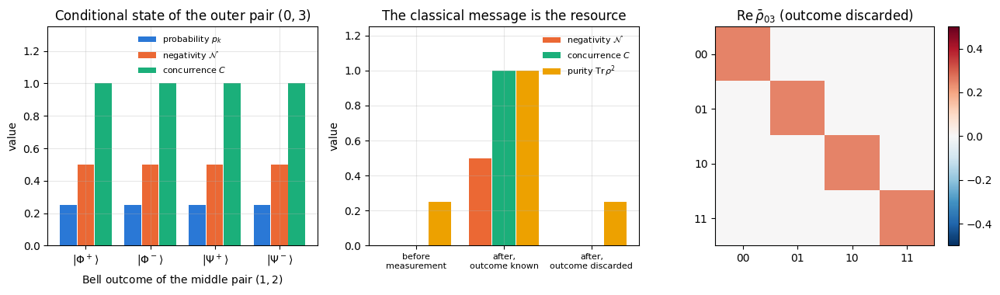
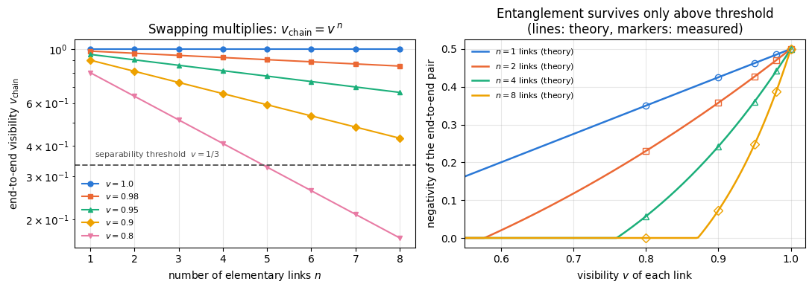

Quantum Many-Body Simulation — Chapter 8 — Quantum information protocols
1. Introduction and motivation
Teleportation (notebook 20) showed that one shared Bell pair, one ebit, together with two classical bits can stand in for one transmitted qubit. This notebook follows that bookkeeping further and treats entanglement as a resource that is distributed in advance, spent by protocols, and traded for other resources. Two protocols make the trade concrete.
Entanglement swapping. Alice and Bob may be too far apart to share a pair directly: photons sent through an optical fibre are lost exponentially with distance, and no-cloning forbids amplifying them. A relay, Charlie, therefore stands in the middle. Alice’s qubit \(0\) is entangled with qubit \(1\) at the relay; a second, completely independent pair consists of qubit \(2\) at the relay and qubit \(3\) at Bob’s. Qubits \(0\) and \(3\) have never interacted and are described by a state that contains no correlation whatsoever. Charlie then performs a Bell measurement, a joint measurement in the basis of the four Bell states, on qubits \(1\) and \(2\) — and afterwards \(0\) and \(3\) are in a maximally entangled state. Nothing travelled between the two outer qubits except a two-bit classical message saying which of four outcomes occurred. The idea is due to Żukowski, Zeilinger, Horne and Ekert (1993), was demonstrated with photons by Pan and co-workers (1998), and is the elementary step of a quantum repeater, the standard proposal for distributing entanglement through optical fibre over distances much larger than its attenuation length (the distance over which the transmission of the fibre falls by a factor \(e\)).
Superdense coding. Alice and Bob share one ebit, prepared long ago. Alice now wants to send Bob two classical bits. She applies one of four Pauli gates to her half of the pair, physically sends that one qubit to Bob, and Bob, with a Bell measurement on the two qubits, recovers both bits with certainty. One qubit carried two bits. Without the shared pair this is impossible: the Holevo bound says a \(d\)-dimensional quantum system carries at most \(\log_2 d\) bits, so one qubit alone carries at most one. The protocol is due to Bennett and Wiesner (1992) and was realised with photons by Mattle, Weinfurter, Kwiat and Zeilinger (1996).
In resource language the two transmission protocols are mirror images: teleportation turns \(1\) ebit \(+\)\(2\) classical bits into \(1\) transmitted qubit, superdense coding turns \(1\) ebit \(+\)\(1\) transmitted qubit into \(2\) classical bits, and swapping turns two short ebits into one long one. All three consist of the same three ingredients: a shared Bell pair, a Bell measurement, and a Pauli correction chosen by a classical message. Once one of them has been understood in full algebraic detail, the others cost almost nothing.
Road map.
Recall the Bell basis and the four Pauli relations that connect its elements (Section 3).
Rewrite the four-qubit state \(\vert\Phi^+\rangle_{01}\otimes\vert\Phi^+\rangle_{23}\) in the Bell basis of the middle pair\((1,2)\). The result, Eq. (5), contains the whole protocol (Section 4).
Implement it with the einsum engine: the state, the Bell-measurement circuit, the four conditional outer states, and the corrections (Sections 5–6).
Measure the entanglement of the outer pair before the measurement, after it conditioned on each outcome, and after it without knowing the outcome — three different answers, and the difference between them is exactly the value of the classical message (Sections 7–8).
Run the protocol as a real device would: a mid-circuit measurement with a jnp.where feed-forward, jit-compiled and vmap-ed over thousands of shots, with error bars on the outcome frequencies (Section 9).
Replace the perfect links by Werner states of visibility \(v\) (Bell pairs mixed with white noise) and prove — then verify on the density tensor — that swapping multiplies the visibilities, \(v_{\text{out}}=v_1v_2\). Iterate over a chain of \(n\) links, watch \(v\) collapse like \(v^n\), and understand why entanglement purification, which distils fewer but better pairs from many noisy ones, is not optional (Sections 10–11).
Turn to superdense coding: protocol, algebra, decoding circuit, perfect statistics for all four messages, the Holevo bound, and the confusion matrix (sent against decoded message) and the transmission rate when the shared pair is depolarised or dephased (Sections 12–17).
What you will learn
Physics
what a Bell measurement is, why it has four outcomes, and why each of them occurs with probability \(1/4\) whenever the two relay qubits are each maximally mixed (and with other probabilities when they are not);
that entanglement can be created between particles that never interacted, and that this does not transmit information — the outer pair is maximally mixed until the classical message arrives;
Werner/isotropic states, the entanglement threshold \(v>1/3\), and the multiplicative degradation of a repeater chain;
the Holevo bound and why superdense coding does not violate it.
Numerical methods
mid-circuit projective measurement on a state vector and on a density tensor (projector, Born probability, renormalisation);
negativity via the partial transpose and Wootters’ concurrence via the spin-flipped matrix;
Bell-diagonal states as random Pauli errors applied to \(\vert\Phi^+\rangle\), and group convolution of error distributions;
reading a confusion matrix: decoding error probability, mutual information, and the difference between the rate of a fixed protocol and the capacity of the resource it uses.
Implementation practice
feed-forward without Python branching: jnp.where selects the correction matrix, so the whole protocol stays inside one jax.jit and can be vmap-ed over shots;
explicit PRNG keys split deterministically — the notebook reproduces exactly;
two independent implementations of the same physics (projection of a pure state vs. Kraus/projection on a density tensor) used as a checkpoint against each other;
binomial error bars on measured frequencies, and the discipline of never quoting a number the code did not print.
19 — Bell states and CHSH: the Bell basis and its correlations — we use them here, we do not re-derive them;
20 — quantum teleportation: the Bell measurement and the classical feed-forward in their original setting.
Conventions. Qubit \(q\) = tensor axis \(q\), counted from \(0\); \(\vert0\rangle\) is the \(+1\) eigenstate of \(Z\); a measurement result \(o\in\{0,1\}\) means the eigenvalue \((-1)^{o}\); the leftmost symbol of a ket is qubit \(0\).
Configuration
Every notebook of this course starts with the same cell. Choose where to run (DEVICE) and the floating-point precision (PRECISION): "double" = float64/complex128 (default, recommended for physics), "single" = float32/complex64 (half the memory, faster on consumer GPUs, but watch the round-off). All code below derives its dtypes from RDTYPE/CDTYPE and its check tolerances from TOL, so nothing else needs to change.
Code
# ==============================================================================# CONFIGURATION -- adapt to your hardware, then run the notebook top to bottom# ==============================================================================DEVICE ="auto"# "auto": use a GPU if JAX finds one, else CPU | "cpu" | "gpu"PRECISION ="double"# "double": float64/complex128 | "single": float32/complex64import osif DEVICE =="cpu": os.environ["JAX_PLATFORMS"] ="cpu"# must be set BEFORE jax is importedimport stringfrom functools import partialimport mathimport numpy as npimport jaximport jax.numpy as jnpfrom jax import lax# Precision is configurable: "double" = float64/complex128 (default; needed for long time evolutions and# tight validation), "single" = float32/complex64 (half the memory, faster on consumer GPUs).# In a notebook PRECISION is defined in the Configuration cell; for this module use the env var QE_PRECISION.PRECISION =globals().get("PRECISION", os.environ.get("QE_PRECISION", "double"))jax.config.update("jax_enable_x64", PRECISION =="double")RDTYPE = jnp.float64 if PRECISION =="double"else jnp.float32 # real dtypeCDTYPE = jnp.complex128 if PRECISION =="double"else jnp.complex64 # complex dtype of all states/operatorsTOL =1e-10if PRECISION =="double"else1e-4# tolerance for sanity checks (asserts)_LETTERS = string.ascii_letters # the 52 einsum index labels a-z, A-Zimport timeimport matplotlib.pyplot as pltif DEVICE =="gpu"and jax.default_backend() =="cpu":print("WARNING: DEVICE='gpu' requested but JAX found no GPU -- running on CPU.")print(f"JAX {jax.__version__} | backend: {jax.default_backend()} | devices: {jax.devices()}")print(f"precision: {PRECISION} -> real {RDTYPE.__name__}, complex {CDTYPE.__name__}, check tolerance TOL={TOL:g}")
JAX 0.11.0 | backend: cpu | devices: [CpuDevice(id=0)]
precision: double -> real float64, complex complex128, check tolerance TOL=1e-10
2. Engine recap and helpers
We need the einsum primitives (apply_gate for state vectors, apply_gate_dm and apply_kraus_dm for density tensors), the reduced density matrices, the entanglement negativity through the partial transpose, and the standard channels. Everything that is specific to these two protocols is written from scratch below.
Engine recap — the simulator primitives used in this notebook (click to expand)
# ==============================================================================# ENGINE RECAP: the functions of quantum_engine.py (SmoQ.jax) used in this notebook.# Each one is derived, with its mathematics and an independent check, in notebook 08b# (Chapter 3), 'Building the quantum simulator engine'.# States are rank-N tensors of shape (2,)*N; every operator acts through ONE einsum.# ==============================================================================# ----------------------------------------------------------------------------# 1. Elementary matrices: Paulis, Clifford generators, rotations# ----------------------------------------------------------------------------I2 = jnp.eye(2, dtype=CDTYPE)X = jnp.array([[0, 1], [1, 0]], dtype=CDTYPE)Y = jnp.array([[0, -1j], [1j, 0]], dtype=CDTYPE)Z = jnp.array([[1, 0], [0, -1]], dtype=CDTYPE)H = jnp.array([[1, 1], [1, -1]], dtype=CDTYPE) / jnp.sqrt(2.0) # Hadamard: Z-basis <-> X-basisP0 = jnp.array([[1, 0], [0, 0]], dtype=CDTYPE) # projector |0><0|P1 = jnp.array([[0, 0], [0, 1]], dtype=CDTYPE) # projector |1><1|CNOT = jnp.array([[1, 0, 0, 0], [0, 1, 0, 0], [0, 0, 0, 1], [0, 0, 1, 0]], dtype=CDTYPE)# ----------------------------------------------------------------------------# 2. THE core primitive: a k-qubit operator acting on a tensor through ONE einsum# ----------------------------------------------------------------------------def apply_gate(psi, U, qubits):"""Apply a k-qubit operator U to the axes `qubits` of the tensor `psi`. MATH ---- One qubit (k=1), target q: psi'[s_0,..,a,..,s_{N-1}] = sum_b U[a,b] psi[s_0,..,b,..,s_{N-1}] Two qubits (k=2), targets (q1,q2); the 4x4 matrix is reshaped to U[a1,a2,b1,b2]: psi'[.., a1, .., a2, ..] = sum_{b1,b2} U[a1,a2,b1,b2] psi[.., b1, .., b2, ..] This IS the action of (1 x .. x U x .. x 1) -- written without ever building it. EINSUM TRANSLATION (generated automatically below) ------------------ N=3, q=1 : "db,abc->adc" d = new (output) index of qubit 1 N=4, q=(1,3) : "efbd,abcd->aecf" e,f = new indices of qubits 1 and 3 Recipe: label the axes of psi with letters a,b,c,...; give every target qubit a NEW letter (the next unused ones); U carries (new letters)+(old letters of the targets); the output is psi's labels with the target letters replaced by the new ones. IMPLEMENTATION NOTES -------------------- * reshape of U: (2^k,2^k) -> (2,)*2k. Row index = (a1..ak), column = (b1..bk), and the FIRST qubit in `qubits` is the most significant bit of the small matrix, i.e. it corresponds to the LEFT factor of kron(A,B). * `qubits` may be any distinct axes in any order: non-neighbouring gates cost the same. * U need not be unitary: projectors, Kraus operators and Hamiltonian terms reuse this. * psi may be ANY tensor with those axes of size 2: a state (rank N), a density tensor (rank 2N: ket axes 0..N-1, bra axes N..2N-1), ... COST O(2^k * 2^N) operations, O(2^N) memory (dense matrix: O(4^N) both). JAX `qubits` must be static Python ints (they define the einsum string); psi and U are traced, so the function can sit inside jit / grad / vmap / scan. """ qubits =tuple(int(q) for q in qubits) k, n =len(qubits), psi.ndim U = jnp.asarray(U, dtype=psi.dtype).reshape((2,) * (2* k)) # matrix -> rank-2k tensor inp =list(_LETTERS[:n]) # labels of psi's axes new = _LETTERS[n:n + k] # fresh labels for the outputs out = inp.copy()for a, q inzip(new, qubits): out[q] = a # target axes get the new labels sub =f"{''.join(new)}{''.join(inp[q] for q in qubits)},{''.join(inp)}->{''.join(out)}"return jnp.einsum(sub, U, psi)def apply_gate_dm(rho, U, qubits):"""Unitary on a density tensor: rho -> U rho U^dagger. MATH rho'[a..;a'..] = sum_{b,b'} U[a,b] rho[b..;b'..] U^*[a',b'] i.e. U acts on the KET axis q and the complex conjugate U^* on the BRA axis N+q. (A density matrix is "a state vector of 2N qubits": vectorisation |rho>> and U (x) U^* acting on it.) IMPLEMENTATION two calls of `apply_gate` -- the same einsum machinery, no new code. COST O(2^k 4^N). """ N = rho.ndim //2 rho = apply_gate(rho, U, qubits) # U on ket axesreturn apply_gate(rho, jnp.conj(jnp.asarray(U)), [N + q for q in qubits]) # U^* on bra axesdef apply_kraus_dm(rho, kraus, qubits):"""Quantum channel in Kraus form: rho -> sum_m K_m rho K_m^dagger, sum_m K_m^dag K_m = 1. EINSUM TRANSLATION (N=2, channel on qubit 0; g = Kraus index, summed!) "gea,gfc,abcd->ebfd" with operands K, K^*, rho [a=ket0, b=ket1, c=bra0, d=bra1; e, f = new ket0, bra0] All Kraus branches are summed INSIDE one einsum -- no Python loop over m. `kraus` has shape (M, 2^k, 2^k). """ qubits =tuple(int(q) for q in qubits) k, N =len(qubits), rho.ndim //2 K = jnp.asarray(kraus, dtype=rho.dtype).reshape((-1,) + (2,) * (2* k)) n = rho.ndim inp =list(_LETTERS[:n]) new_k, new_b, m = _LETTERS[n:n + k], _LETTERS[n + k:n +2* k], _LETTERS[n +2* k] out = inp.copy()for a, b, q inzip(new_k, new_b, qubits): out[q], out[N + q] = a, b ket_old ="".join(inp[q] for q in qubits) bra_old ="".join(inp[N + q] for q in qubits) sub =f"{m}{new_k}{ket_old},{m}{new_b}{bra_old},{''.join(inp)}->{''.join(out)}"return jnp.einsum(sub, K, jnp.conj(K), rho)# ----------------------------------------------------------------------------# 3. State preparation# ----------------------------------------------------------------------------def zero_state(N):"""|00...0>: a rank-N tensor of zeros with a single 1 at index (0,0,...,0). JAX arrays are immutable: `.at[idx].set(v)` returns an updated COPY (functional style)."""return jnp.zeros((2,) * N, dtype=CDTYPE).at[(0,) * N].set(1.0)def basis_state(bits):"""Computational basis state |b_0 b_1 ... b_{N-1}> from a list of bits.""" bits =tuple(int(b) for b in bits)return jnp.zeros((2,) *len(bits), dtype=CDTYPE).at[bits].set(1.0)def bell_state(kind="phi+"):"""The four Bell states as (2,2) tensors: phi+- = (|00> +- |11>)/sqrt2, psi+- = (|01> +- |10>)/sqrt2.""" a =1/ np.sqrt(2) v = {"phi+": [a, 0, 0, a], "phi-": [a, 0, 0, -a], "psi+": [0, a, a, 0], "psi-": [0, a, -a, 0]}[kind]return jnp.array(v, dtype=CDTYPE).reshape(2, 2)def to_dm(psi):"""Pure state -> density TENSOR rho[s..; s'..] = psi[s..] psi^*[s'..] (rank 2N). An outer product: einsum "ab,AB->abAB" -- here via the equivalent tensordot(axes=0)."""return jnp.tensordot(psi, jnp.conj(psi), axes=0)def dm_matrix(rho):"""View a rank-2N density tensor as an ordinary 2^N x 2^N matrix (a reshape, no copy of meaning).""" d =int(round(np.sqrt(rho.size)))return rho.reshape(d, d)# ----------------------------------------------------------------------------# 4. Reduced density matrices & observables (matrix-free)# ----------------------------------------------------------------------------def rdm(psi, keep):"""Reduced density matrix of the qubits `keep` from a PURE state: rho_A = Tr_B |psi><psi|. MATH rho_A[a, a'] = sum_{b} psi[a, b] psi^*[a', b] (a: indices of A, b: of the rest B) EINSUM TRANSLATION N=3, keep=(0,): "abc,Abc->aA" with operands psi, psi^* * letters of B (b,c) appear in BOTH operands and not in the output -> summed = traced out * the kept axis gets a different letter in the second operand -> stays open (a and A) The full |psi><psi| (4^N numbers) is never formed; cost O(2^N 2^|A|). Returns a (2^|A|, 2^|A|) matrix with row/column order following `keep`. """ keep =tuple(int(q) for q in keep) n, k = psi.ndim, len(keep) a =list(_LETTERS[:n]) b = a.copy()for new, q inzip(_LETTERS[n:n + k], keep): b[q] = new sub =f"{''.join(a)},{''.join(b)}->{''.join(a[q] for q in keep)}{''.join(b[q] for q in keep)}"return jnp.einsum(sub, psi, jnp.conj(psi)).reshape(2** k, 2** k)def rdm_dm(rho, keep):"""Partial trace of a density TENSOR (rank 2N), keeping the qubits `keep`. MATH rho_A[a,a'] = sum_b rho[a,b ; a',b] EINSUM N=2, keep=(0,): "abAb->aA" -- the letter b is REPEATED inside one operand and absent from the output: that is a trace over that pair of axes. """ keep =tuple(int(q) for q in keep) N = rho.ndim //2 ket =list(_LETTERS[:N]) bra = [(_LETTERS[N + q] if q in keep else ket[q]) for q inrange(N)] sub =f"{''.join(ket)}{''.join(bra)}->{''.join(ket[q] for q in keep)}{''.join(bra[q] for q in keep)}"return jnp.einsum(sub, rho).reshape(2**len(keep), 2**len(keep))# ----------------------------------------------------------------------------# 5. State characteristics: entropies, fidelity, negativity# ----------------------------------------------------------------------------def purity(rho_mat):"""Tr(rho^2): 1 for pure states, 1/d for the maximally mixed state in dimension d."""return jnp.real(jnp.trace(rho_mat @ rho_mat))def von_neumann_entropy(rho_mat, base=2.0):"""S(rho) = -Tr(rho log rho) = -sum_i lambda_i log lambda_i (in bits for base=2). Eigenvalues are clipped at 1e-16 because 0*log(0) := 0 but log(0) = -inf numerically.""" lam = jnp.clip(jnp.linalg.eigvalsh(rho_mat), 1e-16, None)return-jnp.sum(lam * jnp.log(lam)) / jnp.log(base)def _sqrtm_psd(A):"""Square root of a positive semi-definite matrix via eigendecomposition: V sqrt(w) V^dag.""" w, v = jnp.linalg.eigh(A)return (v * jnp.sqrt(jnp.clip(w, 0, None))) @ v.conj().Tdef as_dm_tensor(rho):"""Accept a density matrix in EITHER form and return the rank-2N tensor (2,)*2N. Both conventions are in use: `rdm` and `dm_matrix` return a (2^N, 2^N) MATRIX, while `to_dm` and the channel functions work with the rank-2N TENSOR (N ket axes, then N bra axes). A (2^N, 2^N) matrix with N > 1 is unambiguous, because a density tensor has every axis of length 2. Passing the matrix form straight to `partial_transpose` used to transpose the WHOLE matrix, which leaves the eigenvalues alone and silently reports zero negativity -- hence this conversion. """ rho = jnp.asarray(rho)if rho.ndim ==2and rho.shape[0] >2: # (2^N, 2^N) matrix with N > 1 d = rho.shape[0] N =int(round(math.log2(d)))if2** N != d:raiseValueError(f"density matrix of dimension {d} is not a power of two")return rho.reshape((2,) * (2* N))ifany(s !=2for s in rho.shape) or rho.ndim %2:raiseValueError(f"not a density matrix or density tensor: shape {rho.shape}")return rhodef partial_transpose(rho, qubits):"""Partial transpose on subsystem A = `qubits`, for a density tensor OR a (2^N, 2^N) matrix. In tensor form it is trivial: SWAP the ket axis q with the bra axis N+q for q in A. (With a 2^N x 2^N matrix this requires painful index gymnastics -- here: one `transpose`.) RETURNS the rank-2N tensor; wrap in `dm_matrix` for the matrix form.""" rho = as_dm_tensor(rho) N = rho.ndim //2 perm =list(range(2* N))for q in qubits: perm[q], perm[N + q] = perm[N + q], perm[q]return jnp.transpose(rho, perm)def negativity(rho, qubits):"""Entanglement negativity (Peres-Horodecki / PPT criterion). N(rho) = (||rho^{T_A}||_1 - 1)/2 = sum of |negative eigenvalues| of the partial transpose, E_N = log2 ||rho^{T_A}||_1 = log2(2N+1) (logarithmic negativity). N > 0 => entangled (for 2x2 and 2x3 systems also <=). Returns (N, E_N).""" lam = jnp.linalg.eigvalsh(dm_matrix(partial_transpose(rho, qubits))) neg = jnp.sum(jnp.abs(lam) - lam) /2return neg, jnp.log2(2* neg +1)# ----------------------------------------------------------------------------# 7. Noise channels (Kraus operators): density matrix and quantum-trajectory forms# ----------------------------------------------------------------------------def kraus_depolarizing(p):"""Depolarising channel rho -> (1-p) rho + (p/3)(X rho X + Y rho Y + Z rho Z). Kraus: sqrt(1-p) 1, sqrt(p/3) X, sqrt(p/3) Y, sqrt(p/3) Z. Bloch vector shrinks by 1 - 4p/3."""return jnp.stack([jnp.sqrt(1- p) * I2, jnp.sqrt(p /3) * X, jnp.sqrt(p /3) * Y, jnp.sqrt(p /3) * Z])def kraus_dephasing(p):"""Dephasing (phase-flip) channel rho -> (1-p) rho + p Z rho Z : coherences rho_01 -> (1-2p) rho_01."""return jnp.stack([jnp.sqrt(1- p) * I2, jnp.sqrt(p) * Z])def kraus_amplitude_damping(g):"""Amplitude damping (T1 decay |1> -> |0> with probability g): K0 = [[1,0],[0,sqrt(1-g)]] (no decay -- but the amplitude of |1> shrinks: 'no click' is information) K1 = [[0,sqrt(g)],[0,0]] (decay event = sqrt(g) |0><1| = sqrt(g) sigma^+, engine SP).""" K0 = jnp.array([[1, 0], [0, jnp.sqrt(1- g)]], dtype=CDTYPE) K1 = jnp.array([[0, jnp.sqrt(g)], [0, 0]], dtype=CDTYPE)return jnp.stack([K0, K1])
Code
# ==============================================================================# PLOT STYLE + small helpers used throughout this notebook# ==============================================================================PALETTE = ["#2a78d6", "#eb6834", "#1baf7a", "#eda100", "#e87ba4", "#4a3aa7"] # colour-blind-friendly, fixed orderMARKERS = ["o", "s", "^", "D", "v", "P"]plt.rcParams.update({"axes.prop_cycle": plt.cycler(color=PALETTE), "axes.grid": True,"grid.alpha": 0.3, "font.size": 10, "legend.frameon": False})def max_abs(a):"""Largest absolute entry of an array, as a Python float."""returnfloat(jnp.max(jnp.abs(jnp.asarray(a))))def dm_tensor(mat, N):"""Inverse of `dm_matrix`: view a 2^N x 2^N matrix as a rank-2N density tensor (ket axes 0..N-1, bra axes N..2N-1)."""return jnp.asarray(mat, dtype=CDTYPE).reshape((2,) * (2* N))def neg2(rho_mat):"""Entanglement negativity of a TWO-qubit density matrix (4x4), qubit 0 vs qubit 1. MATH N(rho) = (||rho^{T_A}||_1 - 1)/2 = sum of |negative eigenvalues of rho^{T_A}|. For 2x2 systems the Peres-Horodecki criterion is necessary AND sufficient: N > 0 <=> the state is entangled. Maximally entangled (Bell) state: N = 1/2. """returnfloat(negativity(dm_tensor(rho_mat, 2), [0])[0])def concurrence(rho_mat):"""Wootters' concurrence of a TWO-qubit density matrix (Phys. Rev. Lett. 80, 2245 (1998)). MATH spin-flipped state rho~ = (Y (x) Y) rho^* (Y (x) Y) lambda_1 >= ... >= lambda_4 = square roots of the eigenvalues of rho rho~ C(rho) = max(0, lambda_1 - lambda_2 - lambda_3 - lambda_4). Pure product state: C = 0. Bell state: C = 1. (An entanglement measure for two qubits: the entanglement of formation is a monotone function of C.) IMPLEMENTATION rho rho~ is not Hermitian, so instead of a general eigenvalue problem we use the Hermitian form sqrt(rho) rho~ sqrt(rho). With A = sqrt(rho) and B = sqrt(rho) rho~ we have rho rho~ = AB and sqrt(rho) rho~ sqrt(rho) = BA, and AB, BA have the SAME eigenvalues (also for singular rho); they are real and non-negative, so `eigvalsh` applies. """ YY_ = jnp.kron(Y, Y) rho_mat = jnp.asarray(rho_mat, dtype=CDTYPE) rho_tilde = YY_ @ jnp.conj(rho_mat) @ YY_ s = _sqrtm_psd(rho_mat) lam = jnp.sqrt(jnp.clip(jnp.linalg.eigvalsh(s @ rho_tilde @ s), 0.0, None)) # ascendingreturnfloat(jnp.maximum(0.0, lam[3] - lam[2] - lam[1] - lam[0]))def binom_err(p_hat, n):"""Standard error of a frequency estimated from n independent Bernoulli trials: sqrt(p(1-p)/n)."""return np.sqrt(np.clip(p_hat, 0, 1) * (1- np.clip(p_hat, 0, 1)) / n)
3. The Bell basis and the four Pauli relations
Everything below runs on four two-qubit states, the Bell basis
where \(k\) runs over the four labels. We will use Eq. (2) more than once — it is the reason several “surprising” results below are not surprising at all.
3.1 One Bell state generates the other three
Apply a Pauli matrix to the first qubit of \(\vert\Phi^+\rangle\) and see what happens. Since \(X\vert0\rangle=\vert1\rangle\), \(X\vert1\rangle=\vert0\rangle\), \(Z\vert0\rangle=\vert0\rangle\), \(Z\vert1\rangle=-\vert1\rangle\):
reaches all four Bell states from \(\vert\Phi^+\rangle\) (the last one up to an irrelevant global sign). We call \(o_1\) the phase bit and \(o_2\) the flip bit. Because \(U_{o_1o_2}^2=\pm\mathbb 1\), the same operator also undoes the change: it is both the encoder and the correction.
3.2 It does not matter which side you act on
A second identity we use constantly: for any \(2\times2\) matrix \(M\),
Proof. Write \(\vert\Phi^+\rangle=\frac{1}{\sqrt2}\sum_{j}\vert j\rangle\vert j\rangle\). Then \((\mathbb 1\otimes M)\vert\Phi^+\rangle=\frac{1}{\sqrt2}\sum_{j,i}M_{ij}\vert j\rangle\vert i\rangle\) and \((M^{\mathsf T}\otimes\mathbb 1)\vert\Phi^+\rangle=\frac{1}{\sqrt2}\sum_{j,i}(M^{\mathsf T})_{ij}\vert i\rangle\vert j\rangle =\frac{1}{\sqrt2}\sum_{i,j}M_{ji}\vert i\rangle\vert j\rangle\); renaming the summation letters in the second expression gives the first. \(\square\)
Since \(X^{\mathsf T}=X\), \(Z^{\mathsf T}=Z\) and \(Y^{\mathsf T}=-Y\), Eq. (4) says that a Pauli error on one half of a Bell pair is the same as a Pauli error on the other half, up to a sign. Transposition therefore maps \(\{\mathbb 1,X,Y,Z\}\) to \(\{\mathbb 1,X,-Y,Z\}\): it moves no error onto a different label, and the signs are global phases that cancel in a density matrix. This single fact will explain the entire behaviour of noisy links in Section 10.
Equation (4) is a statement about a transpose, and the Pauli matrices are the worst possible test data for it: \(X\) and \(Z\) are real and symmetric, so for them \(M\), \(M^{\mathsf T}\), \(M^{*}\) and \(M^{\dagger}\) are all the same matrix and a wrong version of Eq. (4) would still reproduce them. The checkpoint below therefore uses a generic complex non-symmetric \(M\) alongside the Paulis, and prints how far the three plausible near-misses (\(M\), \(M^{*}\), \(M^{\dagger}\) instead of \(M^{\mathsf T}\)) land.
3.3 The Bell measurement as a circuit
A Bell measurement is a projective measurement in the basis of Eq. (1). Hardware cannot measure in an entangled basis directly; it rotates the entangled basis into the computational basis and then measures each qubit separately. The rotation is \(\mathrm{CNOT}\) (control = first qubit, target = second) followed by a Hadamard on the first qubit:
Read the table from right to left and it is the preparation circuit of a Bell state; read it left to right and it is the measurement. The labels are chosen so that \(o_1\) is exactly the phase bit and \(o_2\) exactly the flip bit of Eq. (3) — the two read-out bits are the exponents of the correction \(U_{o_1o_2}=X^{o_2}Z^{o_1}\).
Let us put all of this into code and check it before we build anything on top of it.
Code
# ==============================================================================# STEP 1: Bell basis, the encoder/correction family U(o1,o2), and the Bell-measurement circuit# ==============================================================================BELL_LABELS = ["Phi+", "Phi-", "Psi+", "Psi-"] # order fixed by the read-out bits (o1, o2)BELL_BITS = [(0, 0), (1, 0), (0, 1), (1, 1)] # (phase bit, flip bit)BELL_TEX = [r"$\vert\Phi^+\rangle$", r"$\vert\Phi^-\rangle$", r"$\vert\Psi^+\rangle$", r"$\vert\Psi^-\rangle$"]def pauli_correction(o1, o2):"""U(o1,o2) = X^{o2} Z^{o1} -- Eq. (3). MATH U(0,0)=1, U(1,0)=Z, U(0,1)=X, U(1,1)=XZ = -i Y. Acting on the FIRST qubit of |Phi+> it produces |Phi+>, |Phi->, |Psi+>, -|Psi->. JAX `o1`, `o2` may be TRACED integers: the matrices are selected with `jnp.where`, not with a Python `if`, so this function survives jit and vmap (this is the feed-forward of Section 9). """ Zp = jnp.where(o1 ==1, Z, I2) Xp = jnp.where(o2 ==1, X, I2)return Xp @ Zpdef bell_basis_change(psi, qa, qb):"""Rotate the Bell basis of qubits (qa, qb) into the computational basis: CNOT(qa->qb), then H on qa. Afterwards a Z-basis read-out of (qa, qb) IS a Bell measurement, with bits (o1, o2) as in the table above.""" psi = apply_gate(psi, CNOT, [qa, qb])return apply_gate(psi, H, [qa])def bell_prep(psi, qa, qb):"""Inverse of `bell_basis_change`: H on qa, then CNOT(qa->qb) -- turns |o1 o2> into the Bell state B(o1,o2).""" psi = apply_gate(psi, H, [qa])return apply_gate(psi, CNOT, [qa, qb])# --- CHECKPOINT: Eq. (3) and the measurement table ---------------------------------------------------phi_plus = bell_state("phi+") # (2,2) tensorbell_from_U, err_U, err_meas = [], 0.0, 0.0for lab, (o1, o2) inzip(BELL_LABELS, BELL_BITS): made = apply_gate(phi_plus, pauli_correction(o1, o2), [0]) # U on the FIRST qubit of |Phi+> ref = bell_state({"Phi+": "phi+", "Phi-": "phi-", "Psi+": "psi+", "Psi-": "psi-"}[lab]) ovl =abs(complex(jnp.vdot(ref, made))) # |<ref|made>| = 1 up to a global phase err_U =max(err_U, abs(ovl -1.0)) rotated = bell_basis_change(ref, 0, 1) # the measurement circuit target = basis_state([o1, o2]) err_meas =max(err_meas, abs(abs(complex(jnp.vdot(target, rotated))) -1.0)) bell_from_U.append(made)print(f" U(o1={o1}, o2={o2}) |Phi+> = {lab:5s} (overlap {ovl:.12f}) "f"measurement circuit sends {lab:5s} -> |{o1}{o2}>")print(f"\nmax error of Eq. (3): {err_U:.2e} max error of the read-out table: {err_meas:.2e}")assert err_U <1e3* TOL and err_meas <1e3* TOL# --- CHECKPOINT: the transpose identity, Eq. (4) -----------------------------------------------------# A Pauli-only test would be worthless here: X and Z are symmetric AND real, so for them transpose,# conjugate and adjoint all coincide and a wrong version of Eq. (4) would still pass. We therefore use a# generic complex, non-symmetric, non-Hermitian M -- and Y, whose transpose carries the minus sign.M_gen = jnp.array([[0.3+0.7j, -1.2+0.4j], [0.9+0.1j, 0.2-1.1j]], dtype=CDTYPE)print("\nEq. (4): (1 (x) M)|Phi+> vs (M^T (x) 1)|Phi+> -- and the three near-misses")err_T =0.0for nm, M in (("generic M", M_gen), ("Y", Y), ("X", X), ("Z", Z)): lhs = apply_gate(phi_plus, M, [1]) # M on the SECOND qubit d_T = max_abs(lhs - apply_gate(phi_plus, M.T, [0])) # Eq. (4): transpose, on the FIRST qubit d_M = max_abs(lhs - apply_gate(phi_plus, M, [0])) # wrong: same matrix d_C = max_abs(lhs - apply_gate(phi_plus, jnp.conj(M), [0])) # wrong: complex conjugate d_H = max_abs(lhs - apply_gate(phi_plus, M.conj().T, [0])) # wrong: adjoint err_T =max(err_T, d_T)print(f" {nm:9s} |LHS - (M^T (x) 1)| = {d_T:.2e} "f"[M: {d_M:.1e} M^*: {d_C:.1e} M^dag: {d_H:.1e}]")print(f"max error of Eq. (4): {err_T:.2e}")assert err_T <1e3* TOL# the test has teeth: for the generic M the three wrong variants are all O(1) awaylhs_g = apply_gate(phi_plus, M_gen, [1])assertmin(max_abs(lhs_g - apply_gate(phi_plus, m, [0]))for m in (M_gen, jnp.conj(M_gen), M_gen.conj().T)) >0.1
U(o1=0, o2=0) |Phi+> = Phi+ (overlap 1.000000000000) measurement circuit sends Phi+ -> |00>
U(o1=1, o2=0) |Phi+> = Phi- (overlap 1.000000000000) measurement circuit sends Phi- -> |10>
U(o1=0, o2=1) |Phi+> = Psi+ (overlap 1.000000000000) measurement circuit sends Psi+ -> |01>
U(o1=1, o2=1) |Phi+> = Psi- (overlap 1.000000000000) measurement circuit sends Psi- -> |11>
max error of Eq. (3): 2.22e-16 max error of the read-out table: 2.22e-16
Eq. (4): (1 (x) M)|Phi+> vs (M^T (x) 1)|Phi+> -- and the three near-misses
generic M |LHS - (M^T (x) 1)| = 0.00e+00 [M: 1.5e+00 M^*: 1.6e+00 M^dag: 1.6e+00]
Y |LHS - (M^T (x) 1)| = 0.00e+00 [M: 1.4e+00 M^*: 0.0e+00 M^dag: 1.4e+00]
X |LHS - (M^T (x) 1)| = 0.00e+00 [M: 0.0e+00 M^*: 0.0e+00 M^dag: 0.0e+00]
Z |LHS - (M^T (x) 1)| = 0.00e+00 [M: 0.0e+00 M^*: 0.0e+00 M^dag: 0.0e+00]
max error of Eq. (4): 0.00e+00
Both halves of the dictionary check out to machine precision: the four operators \(U_{o_1o_2}\) generate the four Bell states from \(\vert\Phi^+\rangle\), and the circuit \(\mathrm{CNOT}\)–\(H\) maps each Bell state to the computational basis state labelled by the very same two bits. From now on “Bell measurement” means: run bell_basis_change, read the two qubits in the \(Z\) basis, and interpret the bits as \((o_1,o_2)\).
The second block confirms Eq. (4) and shows why the choice of test matrix matters. For \(X\) the transpose, the conjugate and the adjoint all give \(0\) — that row proves nothing. For \(Y\) the conjugate happens to coincide with the transpose, so it also passes. Only the generic \(M\) separates the four candidates: \(M^{\mathsf T}\) reproduces the left-hand side exactly while \(M\), \(M^{*}\) and \(M^{\dagger}\) all land \(1.5\) to \(1.6\) away. With Pauli matrices alone the checkpoint could not have failed.
4. Entanglement swapping: the complete algebra
4.1 The setup
Four qubits, numbered \(0,1,2,3\). Qubits \(0\) and \(1\) are a Bell pair (say, produced at a source in Alice’s laboratory and one half sent to a relay station in the middle); qubits \(2\) and \(3\) are a second, independently produced Bell pair (one half at the relay, one half with Bob). The relay holds qubits \(1\) and \(2\); Alice holds \(0\); Bob holds \(3\). The initial state is a product of two Bell pairs,
Because it is a product across the cut \((0,1)\,\vert\,(2,3)\), qubit \(0\) and qubit \(3\) are completely uncorrelated: the reduced state of the pair \((0,3)\) is \(\rho_0\otimes\rho_3=\tfrac{\mathbb 1}{2}\otimes\tfrac{\mathbb 1}{2}=\tfrac{\mathbb 1_4}{4}\) (each half of a Bell pair alone is maximally mixed). We will confirm this numerically in a moment.
4.2 Regrouping the four-qubit state
Write the state out. With the leftmost symbol denoting qubit \(0\),
Now — and this is the only step that needs care — regroup the four labels as (middle pair \((1,2)\)) \(\otimes\) (outer pair \((0,3)\)). Term by term, reading the four digits as \((s_0,s_1,s_2,s_3)\):
term
\((s_1,s_2)\) = middle
\((s_0,s_3)\) = outer
\(\vert0000\rangle\)
\(00\)
\(00\)
\(\vert0011\rangle\)
\(01\)
\(01\)
\(\vert1100\rangle\)
\(10\)
\(10\)
\(\vert1111\rangle\)
\(11\)
\(11\)
The middle and the outer pair always carry the same two bits. Hence, compactly,
Equation (5) is entanglement swapping. Read it as a physicist reads a Schmidt decomposition:
the four terms are orthogonal, each with amplitude \(1/2\), so a Bell measurement on the middle pair yields each of the four outcomes with probability \(\vert 1/2\vert^2=1/4\). This holds for the state \(\vert\chi\rangle\) and, more generally, whenever each relay qubit on its own is maximally mixed; links that are less than maximally entangled change it (Section 9);
conditioned on outcome \(k\), the outer pair collapses into the same Bell state \(\vert B_k\rangle_{03}\) — a maximally entangled state of two qubits that were never in contact;
Bob restores the standard form by applying \(U_{o_1o_2}=X^{o_2}Z^{o_1}\) to his qubit, where \((o_1,o_2)\) are exactly the relay’s two read-out bits. This is the classical message: two bits per swap.
The last point needs one line of care, because Eq. (3) builds \(\vert B_k\rangle\) from \(\vert\Phi^+\rangle\) by acting on the first qubit, while Bob holds the second one. Writing \(\vert B_k\rangle=(U_k\otimes\mathbb 1)\vert\Phi^+\rangle\) and applying \(U_k\) to the second qubit,
since \(U_kU_k^{\mathsf T}=\mathbb 1\) for all four \(U_k\) (check: \(\mathbb 1\), \(ZZ\), \(XX\) and \((XZ)(ZX)\) are all \(\mathbb 1\)). So Bob’s correction works because of Eq. (4); Exercise 1 asks what happens if Alice does it instead, or if both do.
4.4 The protocol, and what each participant knows
step
who
action
1
source A
prepare \(\vert\Phi^+\rangle\) on \((0,1)\); keep \(0\), send \(1\) to the relay
2
source B
prepare \(\vert\Phi^+\rangle\) on \((2,3)\); send \(2\) to the relay, \(3\) to Bob
3
relay
Bell measurement on \((1,2)\); obtain \((o_1,o_2)\); broadcast these two bits
4
Bob
apply \(X^{o_2}Z^{o_1}\) to qubit \(3\)
5
—
\((0,3)\) is in \(\vert\Phi^+\rangle\)
Physics insight. Nothing in this list transports a quantum state from \(0\) to \(3\). The measurement in step 3 is performed on other qubits entirely, and the message in step 3 is classical. What the protocol does is consume two units of entanglement (one per pair) and produce one unit across a longer distance. Entanglement is spent in the process.
5. From formula to code
Three functions suffice. two_bell_pairs builds \(\vert\chi\rangle\) the way hardware would: \(H\) on one qubit of each pair, then a \(\mathrm{CNOT}\). project_bits performs a projective measurement of chosen qubits onto chosen outcomes — the projector \(P_0=\vert0\rangle\langle0\vert\) or \(P_1=\vert1\rangle\langle1\vert\) applied with apply_gate is exactly the einsum
and the Born probability is the squared norm of the result, \(p=\lVert P_o\psi\rVert^2\), because \(P_o\) is a projector: \(\langle\psi\vert P_o^\dagger P_o\vert\psi\rangle=\langle\psi\vert P_o\vert\psi\rangle\). The post-measurement state is the renormalised \(P_o\psi/\sqrt{p}\). Finally rdm(psi, [0, 3]) returns the reduced density matrix of the outer pair as a \(4\times4\) matrix — the contraction "abcd,AbcD->adAD" followed by a reshape to \((4,4)\): the middle letters \(b,c\) are repeated in both operands and absent from the output, so they are summed, i.e. traced out; the kept ket indices \(a,d\) come first and the kept bra indices \(A,D\) second, which is what makes the reshaped object the matrix \(\rho[(a d),(A D)]\) (the order aAdD would give a \(4\times4\) array that is not even Hermitian).
Because we want all four outcomes and their exact probabilities, we do not sample here: we simply project onto each of the four possibilities in turn. Sampling comes in Section 9.
Code
# ==============================================================================# STEP 2: the four-qubit state, projective measurement, and the outer reduced state# ==============================================================================QA, QM1, QM2, QB =0, 1, 2, 3# Alice's qubit, the two relay qubits, Bob's qubitdef two_bell_pairs():"""|Phi+>_{01} (x) |Phi+>_{23} as a rank-4 tensor of shape (2,2,2,2), built with gates: H on qubit 0 and a CNOT(0->1) make the first pair, the same on (2,3) makes the second.""" psi = zero_state(4) psi = apply_gate(psi, H, [QA]) psi = apply_gate(psi, CNOT, [QA, QM1]) psi = apply_gate(psi, H, [QM2])return apply_gate(psi, CNOT, [QM2, QB])def project_bits(psi, qubits, bits):"""Projective Z-measurement of `qubits` onto the results `bits`. Returns (probability, post-state). MATH p = || P_{b_1}^{(q_1)} ... P_{b_k}^{(q_k)} |psi> ||^2 , |psi'> = (product of projectors)|psi> / sqrt(p). COST one einsum per projector, O(2^N) each -- no 2^N x 2^N projector is ever built. """for q, b inzip(qubits, bits): psi = apply_gate(psi, jnp.where(b ==0, P0, P1), [q]) p = jnp.real(jnp.vdot(psi, psi))return p, psi / jnp.sqrt(jnp.clip(p, 1e-300, None))# --- The state before anything happens ---------------------------------------------------------------chi = two_bell_pairs()rho_out_before = rdm(chi, [QA, QB]) # reduced state of the OUTER pair (0,3)print("Reduced density matrix of the outer pair (0,3) BEFORE the Bell measurement:")print(np.round(np.asarray(rho_out_before), 6))err_mixed = max_abs(rho_out_before - jnp.eye(4, dtype=CDTYPE) /4)print(f"\n|rho_(0,3) - 1/4| = {err_mixed:.2e} purity = {float(purity(rho_out_before)):.6f} "f"(1/4 = maximally mixed) negativity = {neg2(rho_out_before):.6f} "f"concurrence = {concurrence(rho_out_before):.6f}")assert err_mixed <1e3* TOL
Reduced density matrix of the outer pair (0,3) BEFORE the Bell measurement:
[[0.25+0.j 0. +0.j 0. +0.j 0. +0.j]
[0. +0.j 0.25+0.j 0. +0.j 0. +0.j]
[0. +0.j 0. +0.j 0.25+0.j 0. +0.j]
[0. +0.j 0. +0.j 0. +0.j 0.25+0.j]]
Exactly as predicted: the outer pair starts in \(\rho_{03}=\mathbb 1_4/4\), the maximally mixed two-qubit state. Its purity is \(\mathrm{Tr}\rho^2=1/4\), the smallest value possible in dimension \(4\), and both entanglement measures return \(0\). Qubits \(0\) and \(3\) are as uncorrelated as two qubits can be. Three of these four numbers change under the Bell measurement of the next section, although neither qubit \(0\) nor qubit \(3\) is touched.
6. Checkpoint: the four conditional outer states
We now perform the Bell measurement on the middle pair \((1,2)\) — rotate with bell_basis_change, then project qubits \(1\) and \(2\) onto each of the four bit patterns — and look at what the outer pair became. Equation (5) predicts: probability \(1/4\) for every outcome, and the outer pair in the Bell state with the same label. We check the probability, the overlap with the predicted Bell state, and the fidelity with \(\vert\Phi^+\rangle\)after Bob’s correction \(U_{o_1o_2}\).
Code
# ==============================================================================# STEP 3: Bell measurement on (1,2) -- all four outcomes, exactly# ==============================================================================psi_rot = bell_basis_change(chi, QM1, QM2) # Bell basis of (1,2) -> computational basisphi_plus_vec = bell_state("phi+").reshape(-1) # reference Bell state as a length-4 vectorrows = []print(f"{'(o1,o2)':>9s}{'p(outcome)':>11s}{'outer state':>12s}{'|<B_k|out>|^2':>14s} "f"{'F with Phi+ after U':>21s}{'negativity':>11s}{'concurrence':>12s}")for lab, (o1, o2) inzip(BELL_LABELS, BELL_BITS): p, psi_post = project_bits(psi_rot, [QM1, QM2], [o1, o2]) rho_out = rdm(psi_post, [QA, QB]) # outer pair, conditioned on this outcome Bk = bell_state({"Phi+": "phi+", "Phi-": "phi-", "Psi+": "psi+", "Psi-": "psi-"}[lab]).reshape(-1) ovl =float(jnp.real(jnp.vdot(Bk, rho_out @ Bk))) # <B_k| rho_out |B_k> psi_corr = apply_gate(psi_post, pauli_correction(o1, o2), [QB]) # Bob's feed-forward correction rho_corr = rdm(psi_corr, [QA, QB]) F =float(jnp.real(jnp.vdot(phi_plus_vec, rho_corr @ phi_plus_vec))) rows.append((lab, float(p), ovl, F, neg2(rho_out), concurrence(rho_out), float(purity(rho_out))))print(f"{str((o1, o2)):>9s}{float(p):11.6f}{lab:>12s}{ovl:14.9f}{F:21.9f} "f"{neg2(rho_out):11.6f}{concurrence(rho_out):12.6f}")assertabs(float(p) -0.25) <1e3* TOL andabs(ovl -1.0) <1e3* TOL andabs(F -1.0) <1e3* TOL
(o1,o2) p(outcome) outer state |<B_k|out>|^2 F with Phi+ after U negativity concurrence
(0, 0) 0.250000 Phi+ 1.000000000 1.000000000 0.500000 1.000000
(1, 0) 0.250000 Phi- 1.000000000 1.000000000 0.500000 1.000000
(0, 1) 0.250000 Psi+ 1.000000000 1.000000000 0.500000 1.000000
(1, 1) 0.250000 Psi- 1.000000000 1.000000000 0.500000 1.000000
Every line of Eq. (5) is confirmed to nine decimal places. Each of the four Bell outcomes occurs with probability exactly \(1/4\); the outer pair lands in the Bell state carrying the same label, with overlap \(1\); and after Bob applies \(X^{o_2}Z^{o_1}\) the outer pair is in \(\vert\Phi^+\rangle\) with fidelity \(1\). The negativity of the conditional outer state is \(1/2\) and the concurrence is \(1\) — the maximal values for two qubits — although before the measurement both were \(0\).
Common pitfall. “The measurement created entanglement at a distance, so something must have travelled.” No physical system and no signal travelled between qubits \(0\) and \(3\). The measurement is a local operation on qubits \(1\) and \(2\), which happen to be entangled with \(0\) and \(3\) respectively. What it produces at Alice’s and Bob’s site is a random one of four Bell states; which one, only the relay knows. The next section shows that without that knowledge the outer pair is still exactly \(\mathbb 1_4/4\).
7. Entanglement in, entanglement out: negativity and concurrence
Two standard measures quantify the entanglement of a two-qubit mixed state.
Negativity (Vidal and Werner, 2002) uses the Peres–Horodecki criterion: transpose the state on one subsystem only,
and look at the eigenvalues. A separable state \(\rho=\sum_kp_k\,\rho^A_k\otimes\rho^B_k\) stays positive under this map, because transposition maps density matrices to density matrices. So a negative eigenvalue proves entanglement, and
is zero for separable states and \(1/2\) for a Bell state. For two qubits the criterion is also sufficient: \(\mathcal N=0\) implies separable. In the tensor representation the partial transpose is free — it is the swap of the ket axis \(q\) with the bra axis \(N+q\), one jnp.transpose (see partial_transpose in the engine recap). Notebook 25 — entanglement negativity develops this in depth.
Concurrence (Wootters, 1998) is built from the spin-flipped state \(\tilde\rho=(Y\otimes Y)\rho^*(Y\otimes Y)\): with \(\lambda_1\ge\lambda_2\ge\lambda_3\ge\lambda_4\) the square roots of the eigenvalues of \(\rho\tilde\rho\),
which is \(0\) for separable and \(1\) for maximally entangled two-qubit states. We implemented it above using the Hermitian form \(\sqrt\rho\,\tilde\rho\sqrt\rho\), which has the same spectrum but can be diagonalised with eigvalsh.
Both measures were already printed above: \(\mathcal N=0\), \(C=0\) in Section 5, before the Bell measurement, \(\mathcal N=1/2\), \(C=1\) after it for each of the four outcomes. The next section adds the third, and most instructive, entry of that table.
8. Discarding the classical message: why two bits matter
Suppose the relay performs the measurement but loses the record (or simply has not sent it yet). Alice and Bob’s description of their pair is then the average over outcomes, weighted by their probabilities:
where the last step is the completeness relation, Eq. (2). The averaged state is identical to the state before the measurement. It is separable, has negativity \(0\), and contains no correlation of any kind.
This is an instance of the no-signalling theorem, and it holds for every protocol of this kind. If the outer pair’s state depended on whether the relay measured, Alice and Bob could detect the relay’s decision instantaneously, at any distance. Quantum mechanics forbids that: any operation performed on qubits \(1,2\) alone leaves the reduced state of \(0,3\) untouched, because the partial trace over \(1,2\) of \(\sum_k(\mathbb 1_{03}\otimes M_k)\,\rho\,(\mathbb 1_{03}\otimes M_k)^\dagger\), for any set of Kraus operators \(M_k\) on qubits \(1,2\) with \(\sum_k M_k^\dagger M_k=\mathbb 1\), equals the partial trace of \(\rho\) (cyclicity of the trace over qubits \(1,2\)).
The entanglement therefore resides in the correlation between the classical record and the quantum state. The two classical bits are what converts a maximally mixed pair, useless for any protocol, into a Bell pair. Let us verify Eq. (6) numerically, in two independent ways.
Code
# ==============================================================================# STEP 4: the outer pair WITHOUT the classical message -- two independent computations# ==============================================================================# (a) average the four conditional states with their probabilitiesrho_avg = jnp.zeros((4, 4), dtype=CDTYPE)for (o1, o2) in BELL_BITS: p, psi_post = project_bits(psi_rot, [QM1, QM2], [o1, o2]) rho_avg = rho_avg + p * rdm(psi_post, [QA, QB])# (b) build the full density tensor, apply the measurement as a DEPHASING channel in the Bell basis# (measure-and-forget = keep only the diagonal blocks of the (1,2) subsystem), then trace out (1,2)rho4 = to_dm(psi_rot) # rank-8 density tensor of the rotated staterho_forgot = jnp.zeros_like(rho4)for (o1, o2) in BELL_BITS: r = apply_gate_dm(rho4, jnp.where(o1 ==0, P0, P1), [QM1]) r = apply_gate_dm(r, jnp.where(o2 ==0, P0, P1), [QM2]) rho_forgot = rho_forgot + r # sum_k P_k rho P_k (projectors are Hermitian)rho_avg_dm = rdm_dm(rho_forgot, [QA, QB])e_a = max_abs(rho_avg - jnp.eye(4, dtype=CDTYPE) /4)e_b = max_abs(rho_avg_dm - jnp.eye(4, dtype=CDTYPE) /4)print("Outer pair averaged over the (unknown) Bell outcome:")print(np.round(np.asarray(rho_avg), 6))print(f"\n(a) probability-weighted average of the four conditional states: |rho - 1/4| = {e_a:.2e}")print(f"(b) measure-and-forget channel on the density tensor: |rho - 1/4| = {e_b:.2e}")print(f" negativity = {neg2(rho_avg):.3e} concurrence = {concurrence(rho_avg):.3e} "f"purity = {float(purity(rho_avg)):.6f}")assert e_a <1e3* TOL and e_b <1e3* TOL
Outer pair averaged over the (unknown) Bell outcome:
[[0.25+0.j 0. +0.j 0. +0.j 0. +0.j]
[0. +0.j 0.25+0.j 0. +0.j 0. +0.j]
[0. +0.j 0. +0.j 0.25+0.j 0. +0.j]
[0. +0.j 0. +0.j 0. +0.j 0.25+0.j]]
(a) probability-weighted average of the four conditional states: |rho - 1/4| = 1.67e-16
(b) measure-and-forget channel on the density tensor: |rho - 1/4| = 1.11e-16
negativity = 0.000e+00 concurrence = 0.000e+00 purity = 0.250000
Two completely different computations — averaging four pure conditional states, and pushing the full \(16\times16\) density tensor through the measure-and-forget channel — give the same maximally mixed \(\mathbb 1_4/4\) to machine precision, with zero negativity and zero concurrence. The entanglement that was so clearly present outcome-by-outcome has vanished on average.
Physics insight. Compare the three numbers we have now measured for the same pair of qubits: negativity \(0\) before, \(1/2\) after the measurement given the outcome, and \(0\) after the measurement without the outcome. Entanglement is a property of the state one assigns, and the state one assigns depends on the information one has. Here the two classical bits turn a state with \(\mathcal N=0\) into one with \(\mathcal N=1/2\), one ebit.
Code
# ==============================================================================# FIGURE: what the Bell measurement does to the outer pair (0,3)# ==============================================================================fig, axes = plt.subplots(1, 3, figsize=(13.0, 3.9))# (left) the four conditional outcomes: probability, negativity, concurrencexpos = np.arange(4)axes[0].bar(xpos -0.27, [r[1] for r in rows], width=0.26, color=PALETTE[0], label="probability $p_k$")axes[0].bar(xpos, [r[4] for r in rows], width=0.26, color=PALETTE[1], label=r"negativity $\mathcal{N}$")axes[0].bar(xpos +0.27, [r[5] for r in rows], width=0.26, color=PALETTE[2], label="concurrence $C$")axes[0].set_xticks(xpos); axes[0].set_xticklabels(BELL_TEX)axes[0].set_xlabel("Bell outcome of the middle pair $(1,2)$"); axes[0].set_ylabel("value")axes[0].set_title("Conditional state of the outer pair $(0,3)$"); axes[0].legend(fontsize=8, loc="upper center")axes[0].set_ylim(0, 1.35)# (middle) before / conditional / averagedlabels = ["before\nmeasurement", "after,\noutcome known", "after,\noutcome discarded"]negs = [neg2(rho_out_before), rows[0][4], neg2(rho_avg)]cons = [concurrence(rho_out_before), rows[0][5], concurrence(rho_avg)]purs = [float(purity(rho_out_before)), rows[0][6], float(purity(rho_avg))] # all three measured, none assumedxp = np.arange(3)axes[1].bar(xp -0.27, negs, width=0.26, color=PALETTE[1], label=r"negativity $\mathcal{N}$")axes[1].bar(xp, cons, width=0.26, color=PALETTE[2], label="concurrence $C$")axes[1].bar(xp +0.27, purs, width=0.26, color=PALETTE[3], label=r"purity $\mathrm{Tr}\,\rho^2$")axes[1].set_xticks(xp); axes[1].set_xticklabels(labels, fontsize=8)axes[1].set_ylabel("value"); axes[1].set_title("The classical message is the resource")axes[1].legend(fontsize=8); axes[1].set_ylim(0, 1.25)# (right) the density matrices, real partsim0 = axes[2].imshow(np.real(np.asarray(rho_avg)), vmin=-0.5, vmax=0.5, cmap="RdBu_r")axes[2].set_xticks(range(4)); axes[2].set_yticks(range(4))axes[2].set_xticklabels(["00", "01", "10", "11"]); axes[2].set_yticklabels(["00", "01", "10", "11"])axes[2].set_title(r"$\mathrm{Re}\,\bar\rho_{03}$ (outcome discarded)"); axes[2].grid(False)fig.colorbar(im0, ax=axes[2], fraction=0.046)fig.tight_layout(); plt.show()

The left panel shows the flat \(p_k=1/4\) distribution over outcomes together with the maximal entanglement of every conditional state. The middle panel summarises the section: negativity and concurrence jump from \(0\) to their maxima only when the outcome is known, while the purity of the unconditional state stays at \(1/4\). The right panel shows that \(\bar\rho_{03}\) really is the flat diagonal matrix \(\mathbb 1_4/4\) — no off-diagonal coherence anywhere.
9. The protocol as hardware runs it: mid-circuit measurement, feed-forward, vmap over shots
So far we projected onto all four outcomes deliberately. A real device does something different: it measures once, gets a random pair of bits, and a classical controller decides within the coherence time which gate to apply next. That is a mid-circuit measurement with feed-forward, and it is the part of a quantum program that is hardest to express in a differentiable, compilable array language — because the “if” depends on data that only exists at run time.
The JAX answer is to never branch. A measurement is
where the projector is selected by jnp.where(o == 0, P0, P1) rather than chosen by a Python if. Both branches are traced, and XLA evaluates the selection on \(2\times2\) matrices, at negligible cost. The correction is selected the same way, inside pauli_correction. The result is a pure function (key) -> (o1, o2, fidelity) that can be jit-compiled once and vmap-ed over an array of keys: thousands of independent runs of the experiment, in one fused XLA program, no Python loop.
JAX practice.jax.random.split(key, 2) produces two statistically independent keys from one. Splitting explicitly (never reusing a key) is what makes stochastic JAX code reproducible: the same seed gives the same 4000 shots on any machine with the same JAX version, and vmap over jax.random.split(key, n_shots) is the idiomatic “run the experiment \(n\) times”.
One subtlety deserves attention: the two relay qubits must be measured in sequence, each conditioned on the collapse caused by the previous one. Measuring qubit \(1\) changes the probabilities for qubit \(2\) (here it does not, because the four outcomes are equiprobable and independent — but in general it does), so the code threads the collapsed, renormalised state from one measurement into the next.
A frequency test against \(p_k=1/4\) is a weak test of this code. All four outcomes are equally likely, so it cannot tell whether the read-out codes were mapped onto the right Bell labels, and it cannot detect a wrong correction at all. The checkpoint below therefore adds three tests that a faulty implementation fails:
unequal outcome probabilities. Replace both links by the less-than-maximally entangled pair \(\sqrt{a}\,\vert00\rangle+\sqrt{1-a}\,\vert11\rangle\) with \(a=0.8\). The relay qubits are then in \(\mathrm{diag}(a,1-a)\otimes\mathrm{diag}(a,1-a)\), and projecting onto the Bell basis gives \(p(\Phi^\pm)=\tfrac12\big(a^2+(1-a)^2\big)=0.34\) and \(p(\Psi^\pm)=a(1-a)=0.16\), so a permuted label map is detected;
a forgotten renormalisation. If the state is not divided by its norm after the first collapse, the second Born probability is computed from a state of norm \(1/2\): \(p(o_2=0)=1/4\) instead of \(1/2\), and the outcome frequencies become \((1/8,1/8,3/8,3/8)\);
swapped correction bits. Applying \(X^{o_1}Z^{o_2}\) instead of \(X^{o_2}Z^{o_1}\) gives the right correction for \((0,0)\) and \((1,1)\) and the orthogonal Bell state for \((1,0)\) and \((0,1)\), so the mean fidelity drops to \(1/2\).
Code
# ==============================================================================# STEP 5: one shot of entanglement swapping -- jit-able, vmap-able, with feed-forward# ==============================================================================def measure_z(key, psi, q):"""Single projective Z-measurement of qubit q: Born rule + collapse, no Python branching. MATH p(0) = <psi| P_0^{(q)} |psi> = rho_q[0,0]; outcome o = 1 with probability 1-p(0); |psi> -> P_o|psi> / sqrt(p(o)). JAX `jnp.where(o == 0, P0, P1)` picks the projector from a TRACED outcome -> jit/vmap safe. """ p0 = jnp.real(rdm(psi, [q])[0, 0]) o = (jax.random.uniform(key) >= p0).astype(jnp.int32) psi = apply_gate(psi, jnp.where(o ==0, P0, P1), [q])return o, psi / jnp.linalg.norm(psi)def swap_shot_from(key, psi0, measure=measure_z, correction=pauli_correction):"""One run of entanglement swapping starting from the four-qubit state psi0. Returns (o1, o2, fidelity of (0,3) with |Phi+> after correction). STEPS rotate the Bell basis of (1,2) -> measure qubit 1 -> measure qubit 2 -> feed-forward correction X^{o2} Z^{o1} on Bob's qubit 3 -> fidelity of the outer pair. `measure` and `correction` are arguments only so that the checkpoint can insert deliberately wrong versions. """ k1, k2 = jax.random.split(key) psi = bell_basis_change(psi0, QM1, QM2) o1, psi = measure(k1, psi, QM1) o2, psi = measure(k2, psi, QM2) psi = apply_gate(psi, correction(o1, o2), [QB]) # Bob's feed-forward rho_out = rdm(psi, [QA, QB]) F = jnp.real(jnp.vdot(phi_plus_vec, rho_out @ phi_plus_vec))return o1, o2, F@jax.jitdef swap_one_shot(key):"""One complete run of entanglement swapping on |Phi+>_{01} |Phi+>_{23}. JAX the whole thing is one traced function of a PRNG key: jit compiles it once, vmap runs many shots."""return swap_shot_from(key, two_bell_pairs())N_SHOTS =4000t0 = time.perf_counter()o1s, o2s, Fs = jax.vmap(swap_one_shot)(jax.random.split(jax.random.PRNGKey(2025), N_SHOTS))o1s, o2s, Fs = np.asarray(jax.block_until_ready(o1s)), np.asarray(o2s), np.asarray(Fs)t_run = time.perf_counter() - t0codes =2* o1s + o2s # 0..3 in the order (0,0),(0,1),(1,0),(1,1)order = [0, 2, 1, 3] # map to BELL_BITS order (o1,o2)freq = np.array([np.mean(codes == c) for c in order])err = binom_err(freq, N_SHOTS)print(f"{N_SHOTS} shots (compile + run: {t_run:.2f} s)\n")print(f"{'outcome':>9s}{'frequency':>12s}{'+- 1 sigma':>10s}{'expected':>9s}{'pulls':>6s}")for lab, f, e inzip(BELL_LABELS, freq, err):print(f"{lab:>9s}{f:12.4f}{e:10.4f}{0.25:9.4f}{(f -0.25) / e:6.2f}")print(f"\nfidelity with |Phi+> after the feed-forward correction: "f"min = {Fs.min():.12f} mean = {Fs.mean():.12f} max = {Fs.max():.12f}")assert Fs.min() >1-1e3* TOL and np.all(np.abs(freq -0.25) <5* err)# --- CHECKPOINT with teeth: unequal probabilities, and two deliberately wrong implementations ---------def bell_freqs(o1s_, o2s_, order_):"""Outcome frequencies in BELL_LABELS order, from read-out bits and a code -> label map.""" c =2* np.asarray(o1s_) + np.asarray(o2s_)return np.array([np.mean(c == k) for k in order_])def run_shots(shot_fn, seed):"""vmap a one-shot function over N_SHOTS keys."""return [np.asarray(x) for x in jax.vmap(shot_fn)(jax.random.split(jax.random.PRNGKey(seed), N_SHOTS))]def max_pull(f_hat, p_true):"""Largest |f_hat - p| / sigma, with the binomial sigma of the HYPOTHESIS p."""returnfloat(np.max(np.abs(f_hat - p_true) / np.sqrt(p_true * (1- p_true) / N_SHOTS)))A_WEAK =0.8# sqrt(a)|00> + sqrt(1-a)|11> on both linkslink = jnp.array([[np.sqrt(A_WEAK), 0.0], [0.0, np.sqrt(1- A_WEAK)]], dtype=CDTYPE)weak_pairs = jnp.einsum("ab,cd->abcd", link, link)p_weak = np.array([0.5* (A_WEAK**2+ (1- A_WEAK)**2)] *2+ [A_WEAK * (1- A_WEAK)] *2) # Phi+, Phi-, Psi+, Psi-o1w, o2w, _ = run_shots(jax.jit(lambda k: swap_shot_from(k, weak_pairs)), 2026)z_right, z_permuted = max_pull(bell_freqs(o1w, o2w, order), p_weak), max_pull(bell_freqs(o1w, o2w, [0, 1, 2, 3]), p_weak)print(f"\nweak links (a = {A_WEAK}): predicted p = {np.round(p_weak, 4)}, measured {np.round(bell_freqs(o1w, o2w, order), 4)}")print(f" largest pull with the label map used above: {z_right:5.2f} sigma; with codes read as (o2,o1): {z_permuted:5.2f} sigma")def measure_z_unnormalised(key, psi, q):"""WRONG on purpose: Born rule + projection, but the collapsed state is not renormalised.""" p0 = jnp.real(rdm(psi, [q])[0, 0]) o = (jax.random.uniform(key) >= p0).astype(jnp.int32)return o, apply_gate(psi, jnp.where(o ==0, P0, P1), [q])o1u, o2u, _ = run_shots(jax.jit(lambda k: swap_shot_from(k, two_bell_pairs(), measure=measure_z_unnormalised)), 2025)z_unnorm = max_pull(bell_freqs(o1u, o2u, order), np.full(4, 0.25))print(f"forgotten renormalisation: frequencies {np.round(bell_freqs(o1u, o2u, order), 4)}, "f"largest pull from 1/4 = {z_unnorm:.1f} sigma")_, _, Fsw = run_shots(jax.jit(lambda k: swap_shot_from(k, two_bell_pairs(), correction=lambda a, b: pauli_correction(b, a))), 2025)print(f"swapped correction bits X^o1 Z^o2: mean fidelity {Fsw.mean():.4f}, min {Fsw.min():.4f}")assert z_right <5and z_permuted >5and z_unnorm >5and Fsw.min() <0.5
4000 shots (compile + run: 0.46 s)
outcome frequency +- 1 sigma expected pulls
Phi+ 0.2482 0.0068 0.2500 -0.26
Phi- 0.2517 0.0069 0.2500 0.26
Psi+ 0.2402 0.0068 0.2500 -1.44
Psi- 0.2597 0.0069 0.2500 1.41
fidelity with |Phi+> after the feed-forward correction: min = 1.000000000000 mean = 1.000000000000 max = 1.000000000000
weak links (a = 0.8): predicted p = [0.34 0.34 0.16 0.16], measured [0.3305 0.355 0.1618 0.1528]
largest pull with the label map used above: 2.00 sigma; with codes read as (o2,o1): 33.64 sigma
forgotten renormalisation: frequencies [0.1265 0.1268 0.362 0.3848], largest pull from 1/4 = 19.7 sigma
swapped correction bits X^o1 Z^o2: mean fidelity 0.5080, min 0.0000
The four outcomes come out flat at \(1/4\) within the binomial error bars (the “pulls” column is the deviation in units of the standard error and should be \(O(1)\)), and — this is the point of the feed-forward — every single shot ends with the outer pair in \(\vert\Phi^+\rangle\) with fidelity \(1\) to machine precision, shot by shot. This is what Bob needs: he holds one pair, and a protocol that reached fidelity \(1\) only on average over shots would be of no use to him.
The second block shows that these tests can fail. With the weak links the outcome probabilities are \(0.34\) and \(0.16\), and the frequencies match them only with the label map order used above; reading the codes with the two bits interchanged misses by many standard deviations. A forgotten renormalisation after the first collapse moves the frequencies to \((1/8,1/8,3/8,3/8)\), far outside the error bars, and interchanging the two correction bits leaves half of the shots in a Bell state orthogonal to \(\vert\Phi^+\rangle\) (fidelity \(0\)), so the mean fidelity falls to about \(1/2\).
vmap bought thousands of independent mid-circuit-measurement experiments, each with its own random numbers, in a single compiled call, with no Python loop anywhere. This is the pattern for every shot-based experiment in this course.
The left panel is the statistical check at the full shot budget; the right panel shows the running estimate of each outcome probability as shots accumulate. The deviations wander inside the \(1/\sqrt n\) envelope of the binomial standard deviation \(\sigma=\sqrt{p(1-p)/n}\), drawn as the solid reference line — the signature of an unbiased estimator with independent samples. Nothing here is specific to entanglement swapping: it is how every measured quantity in this course converges.
10. Noisy links: Werner states and the product rule \(v_{\text{out}}=v_1v_2\)
Real links are not Bell pairs. A fibre, a memory or an imperfect source produces a mixed state, and the standard one-parameter model is the Werner (isotropic) state
i.e. “a Bell pair with probability \(v\), white noise otherwise”; \(v\) is the visibility of notebook 19, Section 11. Its fidelity with \(\vert\Phi^+\rangle\) is \(F=v+\tfrac{1-v}{4}=\tfrac{1+3v}{4}\).
10.1 Werner states are random Pauli errors
The key to everything below is to rewrite Eq. (7) as an error model. By Eq. (3) the four states \((\sigma_k\otimes\mathbb 1)\vert\Phi^+\rangle\), \(\sigma_k\in\{\mathbb 1,X,Y,Z\}\), are precisely the four Bell states, so by Eq. (2)
In words: a Werner state is a perfect Bell pair to which a random Pauli error \(\sigma_k\) has been applied, drawn from the distribution \(q\). Written compactly with the uniform distribution \(u_k=1/4\) and the point mass \(\delta_k\) at \(k=\mathbb 1\),
\[q=(1-v)\,u+v\,\delta . \tag{9}\]
10.2 What the swap does to the errors
Take link \((0,1)\) carrying the error \(\sigma_a\) on its inner qubit \(1\), and link \((2,3)\) carrying \(\sigma_b\) on its inner qubit \(2\) — the inner halves are the ones that travelled to the relay, so that is where noise naturally sits, and by Eq. (4) it makes no difference anyway. Push both errors out, away from the relay, with Eq. (4): an error on qubit \(1\) becomes \(\sigma_a^{\mathsf T}\) on qubit \(0\), and an error on qubit \(2\) becomes \(\sigma_b^{\mathsf T}\) on qubit \(3\). Transposition moves no error onto a different label (Section 3.2), so the two distributions \(q^{(1)},q^{(2)}\) survive the move unchanged. The state is therefore
with the errors sitting on qubits the relay never touches. Hence the Bell measurement proceeds exactly as in Eq. (5) — outcome \(k\) with probability \(1/4\), outer pair in \(\vert B_k\rangle\) — and Bob’s correction restores \(\vert\Phi^+\rangle\)before the errors are taken into account. What is left is
using Eq. (4) once more to move the error from qubit \(3\) to qubit \(0\). Signs and factors of \(i\) are global phases and drop out of the density matrix. The residual error is the product of the two link errors.
10.3 The product rule
So the output error distribution is the convolution of the two input distributions over the group \(\{\mathbb 1,X,Y,Z\}\) (which is the Klein four-group \(\mathbb Z_2\times\mathbb Z_2\) once phases are dropped). Nothing in the argument used isotropy: it holds for any two Bell-diagonal links, i.e. for any pair of random-Pauli-error distributions, and the output is then Bell-diagonal with the convolved distribution, whatever the relay’s outcome was. The Werner family is special only in that the convolution closes on a single parameter. Convolution is easy in the form (9), because the uniform distribution absorbs everything: \(u*u=u\), \(u*\delta=\delta*u=u\), \(\delta*\delta=\delta\). With \(q^{(1)}=(1-v_1)u+v_1\delta\) and \(q^{(2)}=(1-v_2)u+v_2\delta\),
The second form can be read off the error picture directly: the output is error-free if both links are error-free (probability \(F_1F_2\)) or if both carry the same error, which cancels in the product \(\sigma_a^{\mathsf T}\sigma_b\) (probability \(\tfrac{1-F_1}{3}\cdot\tfrac{1-F_2}{3}\) for each of the three errors). The fidelity composes by this bilinear law, which is less convenient than a product; that is why \(v\) is the natural variable of a repeater analysis.
10.4 When the output is still entangled
The partial transpose of \(\rho_W\) has eigenvalues \(\tfrac{1+v}{4}\) (three times) and \(\tfrac{1-3v}{4}\), so
and the state is entangled if and only if \(v>1/3\): the partial transpose of this family turns negative exactly there (Peres, 1996), and for two qubits a positive partial transpose implies separability (Horodecki, 1996). We check all of this numerically now, on the density tensor.
Code
# ==============================================================================# STEP 6: swapping with Werner links -- on the four-qubit density tensor# ==============================================================================BELL_KEYS = ["phi+", "phi-", "psi+", "psi-"] # engine names, in BELL_LABELS / BELL_BITS orderdef werner_matrix(v):"""Werner / isotropic two-qubit state of Eq. (7), visibility v, as a 4x4 matrix.""" phi = bell_state("phi+").reshape(-1)return v * jnp.outer(phi, jnp.conj(phi)) + (1- v) * jnp.eye(4, dtype=CDTYPE) /4def bell_diag_matrix(lams):"""Bell-diagonal two-qubit state rho = sum_k lambda_k |B_k><B_k| as a 4x4 matrix. MATH by Eq. (3) this is |Phi+> with a random Pauli error of distribution `lams` (BELL_BITS order). The Werner state of Eq. (8) is the ISOTROPIC case lambda_2 = lambda_3 = lambda_4. """ out = jnp.zeros((4, 4), dtype=CDTYPE)for lam, key inzip(lams, BELL_KEYS): v = bell_state(key).reshape(-1) out = out + lam * jnp.outer(v, jnp.conj(v))return outdef bell_weights(rho_mat):"""The four Bell-basis populations <B_k|rho|B_k> of a 4x4 density matrix, in BELL_BITS order.""" rho_mat = jnp.asarray(rho_mat, dtype=CDTYPE)return np.array([float(jnp.real(jnp.vdot(bell_state(k).reshape(-1), rho_mat @ bell_state(k).reshape(-1))))for k in BELL_KEYS])def bit_convolve(q1, q2):"""Convolution of two error distributions over the group Z2 x Z2, both in BELL_BITS order. MATH (q1 * q2)[c] = sum_{a + b = c} q1[a] q2[b] , with '+' the bitwise XOR of the label pairs.""" out = np.zeros(4)for i, (a1, a2) inenumerate(BELL_BITS):for j, (b1, b2) inenumerate(BELL_BITS): out[BELL_BITS.index((a1 ^ b1, a2 ^ b2))] += q1[i] * q2[j]return outdef two_links_dm(link1, link2):"""Density TENSOR (rank 8) of two independent links on qubits (0,1) and (2,3). Each argument is either a Werner visibility (a scalar) or a 4x4 two-qubit density matrix. IMPLEMENTATION each link is a (2,2,2,2) tensor with axes (ket,ket,bra,bra); the tensor product of the two must be re-ordered so that ALL ket axes come first: einsum("abAB,cdCD->abcdABCD", link01, link23). """ m1 = werner_matrix(link1) if np.ndim(link1) ==0else jnp.asarray(link1, dtype=CDTYPE) m2 = werner_matrix(link2) if np.ndim(link2) ==0else jnp.asarray(link2, dtype=CDTYPE)return jnp.einsum("abAB,cdCD->abcdABCD", dm_tensor(m1, 2), dm_tensor(m2, 2))def swap_dm(rho4, o1, o2):"""Bell measurement on qubits (1,2) of a four-qubit density tensor, conditioned on the result (o1,o2), followed by Bob's correction. Returns (probability, 4x4 reduced density matrix of the outer pair). MATH rho -> (P_{o1} P_{o2}) U_BM rho U_BM^dag (P_{o1} P_{o2}) / p , p = Tr[...] then U(o1,o2) on qubit 3, then partial trace over (1,2). """ r = apply_gate_dm(rho4, CNOT, [QM1, QM2]) # Bell basis -> computational basis r = apply_gate_dm(r, H, [QM1]) r = apply_gate_dm(r, jnp.where(o1 ==0, P0, P1), [QM1]) # projectors: P rho P r = apply_gate_dm(r, jnp.where(o2 ==0, P0, P1), [QM2]) p = jnp.real(jnp.trace(dm_matrix(r))) r = r / jnp.clip(p, 1e-300, None) r = apply_gate_dm(r, pauli_correction(o1, o2), [QB]) # Bob's correctionreturn p, rdm_dm(r, [QA, QB])def werner_parameter(rho_mat):"""Extract the visibility v from a state of the form (7): v = (4 F - 1)/3 with F = <Phi+|rho|Phi+>.""" phi = bell_state("phi+").reshape(-1) F = jnp.real(jnp.vdot(phi, jnp.asarray(rho_mat, dtype=CDTYPE) @ phi))returnfloat((4* F -1) /3)# --- CHECKPOINT: the product rule, Eq. (10), for a grid of input parameters --------------------------# The last column is the one with teeth. v_out, the negativity and the concurrence of a Bell-diagonal# state all depend ONLY on its largest Bell population, so none of them can detect a violation of# ISOTROPY: a state with weights (0.8575, 0.0998, 0.0285, 0.0143) returns exactly the same three numbers# as the Werner state with v = 0.81 while differing from it by 0.026 entry by entry. We therefore also# compare the output with werner_matrix(v1 v2) element by element.print(f"{'v1':>6s}{'v2':>6s}{'outcome':>8s}{'p':>8s}{'v_out':>9s}{'v1*v2':>9s}{'err':>9s} "f"{'N(out)':>8s}{'(3v-1)/4':>9s}{'C(out)':>8s}{'|rho-Werner|':>13s}")err_prod, err_neg, err_iso =0.0, 0.0, 0.0err_F =0.0for v1, v2 in [(1.0, 1.0), (0.9, 0.9), (0.8, 0.6), (0.5, 0.5), (0.4, 0.9), (0.3, 1.0)]: rho4w = two_links_dm(v1, v2)for (o1, o2) in (BELL_BITS if v1 == v2 ==0.9else [(0, 0)]): p, rho_out = swap_dm(rho4w, o1, o2) v_o, Nn, Cc = werner_parameter(rho_out), neg2(rho_out), concurrence(rho_out) Npred =max(0.0, (3* v1 * v2 -1) /4) d_iso = max_abs(rho_out - werner_matrix(v1 * v2)) err_prod =max(err_prod, abs(v_o - v1 * v2)) err_neg =max(err_neg, abs(Nn - Npred)) err_iso =max(err_iso, d_iso) F1, F2, F_out = (1+3* v1) /4, (1+3* v2) /4, float(jnp.real(rho_out[0, 0] + rho_out[0, 3]+ rho_out[3, 0] + rho_out[3, 3])) /2 err_F =max(err_F, abs(F_out - (F1 * F2 + (1- F1) * (1- F2) /3))) # Eq. (10a)print(f"{v1:6.2f}{v2:6.2f}{str((o1, o2)):>8s}{float(p):8.4f}{v_o:9.6f}{v1 * v2:9.6f} "f"{abs(v_o - v1 * v2):9.1e}{Nn:8.5f}{Npred:9.5f}{Cc:8.5f}{d_iso:13.1e}")print(f"\nmax |v_out - v1 v2| = {err_prod:.2e} max |N - max(0,(3v-1)/4)| = {err_neg:.2e}"f" max |rho_out - rho_Werner(v1 v2)| = {err_iso:.2e}")print(f"max |F_out - [F1 F2 + (1-F1)(1-F2)/3]| = {err_F:.2e} (Eq. (10a))")assert err_prod <1e3* TOL and err_neg <1e3* TOL and err_iso <1e3* TOL and err_F <1e3* TOL# the isotropy column really is an independent test: a skewed link with the same fidelity fools the otherslam_skew = [(1+3*0.81) /4, 0.1425*0.7, 0.1425*0.2, 0.1425*0.1]rho_skew = bell_diag_matrix(lam_skew)print(f"\nskewed Bell-diagonal state with the same fidelity as Werner(v=0.81): "f"v = {werner_parameter(rho_skew):.6f}, N = {neg2(rho_skew):.6f}, C = {concurrence(rho_skew):.6f} "f"-> identical; |rho - Werner| = {max_abs(rho_skew - werner_matrix(0.81)):.3f} -> not identical")assertabs(werner_parameter(rho_skew) -0.81) <1e3* TOL and max_abs(rho_skew - werner_matrix(0.81)) >0.01# --- CHECKPOINT: the convolution rule for links that are NOT isotropic -------------------------------# Section 10.2 derives the group convolution for ARBITRARY Bell-diagonal links; only Section 10.3# specialises it to the Werner family. Here we test the general statement.q_a = np.array([0.55, 0.25, 0.15, 0.05])q_b = np.array([0.70, 0.05, 0.05, 0.20])p_g, rho_g = swap_dm(two_links_dm(bell_diag_matrix(q_a), bell_diag_matrix(q_b)), 0, 0)q_pred, q_meas = bit_convolve(q_a, q_b), bell_weights(rho_g)print(f"\ngeneral Bell-diagonal links q_a = {q_a} q_b = {q_b} p(outcome) = {float(p_g):.6f}")print(f" predicted q_a * q_b = {np.round(q_pred, 6)}")print(f" measured populations = {np.round(q_meas, 6)} max err = {np.max(np.abs(q_pred - q_meas)):.2e}")print(f" output is Bell-diagonal but NOT Werner: |rho_out - Werner({werner_parameter(rho_g):.4f})| = "f"{max_abs(rho_g - werner_matrix(werner_parameter(rho_g))):.4f}")assert np.max(np.abs(q_pred - q_meas)) <1e3* TOL andabs(float(p_g) -0.25) <1e3* TOLassert max_abs(rho_g - bell_diag_matrix(q_pred)) <1e3* TOL # Bell-diagonal, no coherencesassert max_abs(rho_g - werner_matrix(werner_parameter(rho_g))) >0.01# but not isotropic
The measured \(v_{\text{out}}\) equals \(v_1v_2\) to machine precision for every pair we tried (for \(v_1=v_2=0.9\) for all four Bell outcomes), the fidelity obeys Eq. (10a), and the whole output density matrix coincides with \(\rho_W(v_1v_2)\) entry by entry, so the output is a Werner state and agrees with the prediction in more than its fidelity. The outcome probability stays at \(1/4\) regardless of how noisy the links are: each half of a Bell-diagonal pair is maximally mixed, so the relay’s own statistics are flat and it learns nothing about the quality of the links from them. The negativity follows \(\max(0,(3v-1)/4)\) exactly, and the last row of the grid is the interesting one: two links with \(v_1=0.3\) and \(v_2=1.0\) give \(v_{\text{out}}=0.3<1/3\), so the swapped pair is separable — the protocol ran perfectly and produced no entanglement at all, because there was not enough to start with.
The last block tests the general statement of Section 10.3 on two links that are Bell-diagonal but deliberately not isotropic. The measured output populations reproduce the group convolution \(q_a*q_b\) to \(10^{-16}\), the output has no Bell-basis coherences, and it is not a Werner state. This is why the isotropy column above is a meaningful test: a non-isotropic output is possible and would be detected.
Numerical practice. We verified an analytic claim (Eq. (10)) that was derived by a group-theoretic argument — error distributions convolving — using a completely different numerical route: projectors and partial traces on a rank-8 density tensor. When two such different derivations agree to \(10^{-16}\), the chance that both are wrong in the same way is negligible. But notice how carefully the comparison had to be chosen: \(v\), the negativity and the concurrence of a Bell-diagonal state are all functions of its largest population alone, so all three agree with the Werner prediction even for states that are not Werner at all. A checkpoint is useful only if it can fail for the error it is supposed to catch.
11. Repeater chains: why purification is not optional
A quantum repeater divides a long channel into \(n\) elementary links, distributes entanglement on each link separately (this can be done in parallel, and retried until it succeeds, which is the whole point), and then performs \(n-1\) swaps to connect them into one end-to-end pair. Applying Eq. (10) repeatedly, \(n\) links with the same visibility \(v\) give
The end-to-end state decays exponentially in the number of links towards the useless maximally mixed state, and it stops being entangled at all as soon as \(v^n\le1/3\), i.e. after
\[n_{\max}=\frac{\ln(1/3)}{\ln v}\]
links. For \(v=0.95\) that is about \(21\) links; for \(v=0.9\) about \(10\). Every link and every Bell measurement was assumed to succeed, so photon loss plays no role here: the decay is caused by error accumulation alone.
The remedy, proposed in 1998 by Briegel, Dür, Cirac and Zoller in the paper that introduced the quantum repeater, is entanglement purification: take two noisy pairs of visibility \(v\), perform local operations and classical communication, and with some probability obtain one pair with a higher\(v\). Interleaving purification with swapping keeps the working fidelity above threshold at every nesting level. In the scheme of Briegel, Dür, Cirac and Zoller the channel is cut into \(N\) segments and purification alternates with swapping over \(\log_L N\) nesting levels; the total number of elementary pairs consumed then scales as \(N^{\log_LM+1}\) — polynomially in the distance rather than exponentially — and in their refined version each repeater station has to control only \(O(\log N)\) qubits at a time, at the price of a polynomially longer total run time. Their analysis requires the local gates and measurements to be better than a threshold (their worked example uses reliabilities of \(0.995\)), which is the part of the claim the title of the paper refers to. Everything in this notebook is the “swapping” half of that machinery; the “purification” half is a protocol of the same family (local Bell-type measurements plus classical communication), and Exercise 7 asks for one round of it.
Let us verify the chain formula by iterating the swap on density tensors. The chain carries the full \(4\times4\) output state from one swap to the next, so that the final comparison with \(\rho_W(v^n)\) also tests that the state stays isotropic along the chain.
Code
# ==============================================================================# STEP 7: a repeater chain -- iterate the swap and compare with v^n# ==============================================================================N_LINKS_MAX =8V_LIST = [1.0, 0.98, 0.95, 0.90, 0.80]chain, chain_neg = {}, {}for v in V_LIST: rho_chain = werner_matrix(v) # after 1 link: the link itself vs, negs_ = [werner_parameter(rho_chain)], [neg2(rho_chain)]for n inrange(2, N_LINKS_MAX +1): p, rho_chain = swap_dm(two_links_dm(rho_chain, v), 0, 0) # connect the chain so far (full state) with one more link vs.append(werner_parameter(rho_chain)) negs_.append(neg2(rho_chain)) # negativity measured on the actual output state chain[v], chain_neg[v] = np.array(vs), np.array(negs_) pred = v ** np.arange(1, N_LINKS_MAX +1) d_state = max_abs(rho_chain - werner_matrix(v ** N_LINKS_MAX))print(f"v = {v:.2f}: measured v_chain = "+" ".join(f"{x:7.4f}"for x in chain[v]))print(f" v^n = "+" ".join(f"{x:7.4f}"for x in pred) +f" max err = {np.max(np.abs(chain[v] - pred)):.1e} |rho_8 - Werner(v^8)| = {d_state:.1e}")assert np.max(np.abs(chain[v] - pred)) <1e-9and d_state <1e-9nmax = {v: (np.log(1/3) / np.log(v) if v <1else np.inf) for v in V_LIST}print("\nlast link at which the end-to-end pair is still entangled (v^n > 1/3):")for v in V_LIST: n_meas =int(np.sum(chain[v] >1/3))print(f" v = {v:.2f}: n_max (formula) = {nmax[v]:6.2f} last entangled n in our chain = {n_meas}"+ (" (chain not long enough to lose it)"if n_meas == N_LINKS_MAX else""))
v = 0.80: measured v_chain = 0.8000 0.6400 0.5120 0.4096 0.3277 0.2621 0.2097 0.1678
v^n = 0.8000 0.6400 0.5120 0.4096 0.3277 0.2621 0.2097 0.1678 max err = 5.6e-16 |rho_8 - Werner(v^8)| = 5.6e-17
last link at which the end-to-end pair is still entangled (v^n > 1/3):
v = 1.00: n_max (formula) = inf last entangled n in our chain = 8 (chain not long enough to lose it)
v = 0.98: n_max (formula) = 54.38 last entangled n in our chain = 8 (chain not long enough to lose it)
v = 0.95: n_max (formula) = 21.42 last entangled n in our chain = 8 (chain not long enough to lose it)
v = 0.90: n_max (formula) = 10.43 last entangled n in our chain = 8 (chain not long enough to lose it)
v = 0.80: n_max (formula) = 4.92 last entangled n in our chain = 4
Code
# ==============================================================================# FIGURE: the repeater chain -- exponential decay and the entanglement threshold# ==============================================================================fig, axes = plt.subplots(1, 2, figsize=(11.0, 4.0))ns = np.arange(1, N_LINKS_MAX +1)for k, v inenumerate(V_LIST): axes[0].semilogy(ns, chain[v], MARKERS[k] +"-", color=PALETTE[k], ms=5, label=f"$v={v}$")axes[0].axhline(1/3, color="0.35", ls="--", lw=1.4)axes[0].text(1.1, 0.36, r"separability threshold $v=1/3$", fontsize=8, color="0.3")axes[0].set_xlabel("number of elementary links $n$"); axes[0].set_ylabel(r"end-to-end visibility $v_{\rm chain}$")axes[0].set_title(r"Swapping multiplies: $v_{\rm chain}=v^{\,n}$"); axes[0].legend(fontsize=8)vgrid = np.linspace(0.0, 1.0, 400)N_SHOW = [1, 2, 4, 8]for k, n inenumerate(N_SHOW): axes[1].plot(vgrid, np.maximum(0.0, (3* vgrid ** n -1) /4), "-", color=PALETTE[k], lw=1.8, label=f"$n={n}$ links (theory)")for k, n inenumerate(N_SHOW): # measured points from the chains above axes[1].plot(V_LIST, [chain_neg[v][n -1] for v in V_LIST], MARKERS[k], color=PALETTE[k], ms=6, mfc="none")axes[1].set_xlabel("visibility $v$ of each link"); axes[1].set_ylabel(r"negativity of the end-to-end pair")axes[1].set_title("Entanglement survives only above threshold\n(lines: theory, markers: measured)")axes[1].legend(fontsize=8); axes[1].set_xlim(0.55, 1.02)fig.tight_layout(); plt.show()

Left: the measured end-to-end visibility (markers, from actual density-tensor swaps) lies exactly on the straight lines of the semi-log plot, i.e. on \(v^n\), and crosses the separability threshold \(1/3\) after a number of links that shrinks quickly as the link quality drops. In the chains we ran, \(v=0.80\) is the only one that dies inside eight links (it is separable from \(n=5\) on, \(0.8^5=0.328<1/3\)); \(v=0.90\) survives to \(n=10\), as \(n_{\max}=10.43\) predicts. Right: the end-to-end negativity as a function of link quality for chains of different length. The threshold moves to \(v=(1/3)^{1/n}\), which is \(0.87\) for \(n=8\): at eight links \(v=0.90\) still gives a (barely) entangled pair, negativity \(0.073\) out of the maximal \(0.5\), while \(v=0.80\) gives exactly zero. Without purification, distance costs entanglement exponentially.
12. Superdense coding: sending two bits down one qubit
We now run the same machinery backwards. Alice and Bob share one Bell pair \(\vert\Phi^+\rangle_{AB}\), distributed at some earlier, convenient time — perhaps by the repeater of the previous section. Later, Alice learns two classical bits \((m_1,m_2)\) that she must send to Bob, and the only channel available is one that transmits a single qubit.
step
who
action
0
—
Alice and Bob share \(\vert\Phi^+\rangle_{AB}\) (Alice holds \(A\), Bob holds \(B\))
1
Alice
apply \(U_{m_1m_2}=X^{m_2}Z^{m_1}\) to her qubit \(A\)
2
Alice
send qubit \(A\) to Bob
3
Bob
Bell measurement on \((A,B)\): \(\mathrm{CNOT}(A\to B)\), \(H\) on \(A\), read both qubits
4
Bob
the two read-out bits are\((m_1,m_2)\)
12.1 The algebra
By Eq. (3), step 1 turns the shared state into one of the four Bell states:
The four Bell states are orthonormal, hence perfectly distinguishable by a single projective measurement — and by Section 3.3 that measurement is a \(\mathrm{CNOT}\), an \(H\) and two single-qubit read-outs, with the bits coming out in exactly the encoding convention. So Bob recovers \((m_1,m_2)\) with probability \(1\). Two bits, one transmitted qubit.
12.2 Three consequences
Alice never touches Bob’s qubit, yet her local operation changes the global state from one orthogonal state to another. That is only possible because the pair was entangled: a product state \(\vert a\rangle\vert b\rangle\) cannot be moved between four mutually orthogonal states by a unitary acting on \(\vert a\rangle\) alone (there are only two orthogonal directions available in a single qubit).
Alice’s qubit alone carries no information. Her reduced state is \(\mathbb 1/2\) before and after the encoding, for every message — we verify this below. An eavesdropper who intercepts the travelling qubit and does not hold \(B\) learns nothing about the message from it (Section 13 makes this quantitative). She can, however, disturb or withhold the qubit, so this property alone does not make the protocol secure.
The entanglement is consumed. After step 4 the pair is in a computational basis state: no entanglement is left. One ebit was spent to carry one extra bit.
12.3 The resource ledger, and the duality with teleportation
Write the two protocols side by side, with “\(\to\)” meaning “can be simulated using”:
protocol
consumes
achieves
teleportation
\(1\) ebit \(+\)\(2\) classical bits
\(1\) transmitted qubit
superdense coding
\(1\) ebit \(+\)\(1\) transmitted qubit
\(2\) classical bits
They are duals: each one’s output appears in the other’s input list, and composing them is consistent (teleporting a qubit with one ebit and two bits, then using that qubit and a second ebit to send two bits, returns two bits for two ebits and two bits, with no net gain). Both are built from the identical hardware primitives: prepare a Bell pair, apply \(X^{a}Z^{b}\) on one half, perform a Bell measurement. In teleportation the Bell measurement comes first and the Pauli comes second (as a correction chosen by the message); in dense coding the Pauli comes first (as the encoding chosen by the message) and the Bell measurement comes second. Entanglement swapping, Section 4, is the third member of the family: a Bell measurement on halves of two pairs.
Code
# ==============================================================================# STEP 8: superdense coding -- encode, transmit, decode; exact probabilities for all four messages# ==============================================================================def dense_encode(psi_pair, m1, m2, q_alice=0):"""Alice's encoding: apply U(m1,m2) = X^{m2} Z^{m1} to her qubit of the shared pair."""return apply_gate(psi_pair, pauli_correction(m1, m2), [q_alice])def dense_decode_probs(psi_pair, q_alice=0, q_bob=1):"""Bob's decoding: Bell measurement on (A,B); returns the 4 outcome probabilities in the order (o1,o2) = (0,0), (1,0), (0,1), (1,1), i.e. the same order as BELL_LABELS.""" phi = bell_basis_change(psi_pair, q_alice, q_bob) p = jnp.abs(phi.reshape(-1)) **2# |amplitude|^2 for |o1 o2>return jnp.stack([p[0], p[2], p[1], p[3]]) # flat index = 2*o1 + o2 -> our (o1,o2) orderbell_pair = bell_state("phi+")print("Ideal superdense coding -- decoding probability table (rows = message, columns = Bob's read-out):\n")print(f"{'message':>9s} | "+" ".join(f"{lab:>9s}"for lab in BELL_LABELS) +" alice's local state")conf_ideal = np.zeros((4, 4))for i, (m1, m2) inenumerate(BELL_BITS): psi_enc = dense_encode(bell_pair, m1, m2) probs = np.asarray(dense_decode_probs(psi_enc)) conf_ideal[i] = probs rho_A = rdm(psi_enc, [0]) # what the travelling qubit alone looks like dev = max_abs(rho_A - jnp.eye(2, dtype=CDTYPE) /2)print(f"{str((m1, m2)):>9s} | "+" ".join(f"{x:9.6f}"for x in probs) +f" |rho_A - 1/2| = {dev:.1e}")assertabs(probs[i] -1.0) <1e3* TOL and dev <1e3* TOLprint(f"\ndecoding error probability = {1- np.mean(np.diag(conf_ideal)):.2e} "f"(4 messages, each decoded with probability {np.mean(np.diag(conf_ideal)):.12f})")
The table is the identity matrix: every one of the four messages is decoded with certainty, so one qubit really did carry two bits. And the right-hand column shows that Alice’s travelling qubit is in the maximally mixed state \(\mathbb 1/2\) for all four messages. The information resides in the correlation between the travelling qubit and the one Bob already holds.
13. Why two bits is the maximum: the Holevo bound
Without shared entanglement, how many classical bits can one qubit carry? The answer is the Holevo bound (Holevo, 1973). Suppose Alice encodes a message \(i\) with probability \(p_i\) into a quantum state \(\rho_i\) of a system of dimension \(d\). Whatever measurement Bob performs, the mutual information between the message and his result satisfies
\[I(M:O)\;\le\;\chi=S\Big(\sum_ip_i\rho_i\Big)-\sum_ip_iS(\rho_i)\;\le\;S\Big(\sum_ip_i\rho_i\Big)\;\le\;\log_2 d ,\]
where \(S\) is the von Neumann entropy. The first inequality is Holevo’s theorem; the other two use only \(S\ge0\) and the fact that the entropy of a \(d\)-dimensional state is at most \(\log_2d\) (the maximally mixed state). For one qubit \(d=2\), so one qubit carries at most one bit. Dense coding does not contradict this at all: what Bob measures is a two-qubit system, \(d=4\), and \(\log_24=2\). The pre-shared half was delivered earlier, at a time when Alice did not yet know her message — it carries no information about it, and indeed we just measured that Alice’s travelling qubit alone is \(\mathbb 1/2\) for every message.
In the full resource count, dense coding uses one qubit of communication at message time plus one ebit of entanglement distributed earlier, and the earlier distribution itself required sending a qubit. Two qubits were sent in total for two bits. The practical gain is that only one of them has to be sent after the message is known, so the latency-critical transmission is halved.
Let us check the Holevo quantities numerically for the dense-coding ensemble, both as seen by Bob (the full two-qubit ensemble) and as seen by an eavesdropper holding only the travelling qubit.
Code
# ==============================================================================# STEP 9: Holevo chi for the dense-coding ensemble -- Bob (2 qubits) vs an eavesdropper (1 qubit)# ==============================================================================rho_bob_avg = jnp.zeros((4, 4), dtype=CDTYPE) # ensemble average of the full pairrho_eve_avg = jnp.zeros((2, 2), dtype=CDTYPE) # ensemble average of the travelling qubit aloneS_cond_bob = S_cond_eve =0.0for (m1, m2) in BELL_BITS: psi_enc = dense_encode(bell_pair, m1, m2) rb = jnp.outer(psi_enc.reshape(-1), jnp.conj(psi_enc.reshape(-1))) re = rdm(psi_enc, [0]) rho_bob_avg = rho_bob_avg +0.25* rb rho_eve_avg = rho_eve_avg +0.25* re S_cond_bob +=0.25*float(von_neumann_entropy(rb)) S_cond_eve +=0.25*float(von_neumann_entropy(re))chi_bob =float(von_neumann_entropy(rho_bob_avg)) - S_cond_bobchi_eve =float(von_neumann_entropy(rho_eve_avg)) - S_cond_eveprint(f"Bob holds both qubits (d = 4): S(avg) = {float(von_neumann_entropy(rho_bob_avg)):.6f} bits, "f"avg S(rho_i) = {S_cond_bob:.6f} bits -> chi = {chi_bob:.6f} bits (log2 d = 2)")print(f"Eavesdropper holds only the travelling qubit (d = 2): S(avg) = "f"{float(von_neumann_entropy(rho_eve_avg)):.6f} bits, avg S(rho_i) = {S_cond_eve:.6f} bits "f"-> chi = {chi_eve:.6f} bits")assertabs(chi_bob -2.0) <1e-9andabs(chi_eve) <1e-9
Bob holds both qubits (d = 4): S(avg) = 2.000000 bits, avg S(rho_i) = 0.000000 bits -> chi = 2.000000 bits (log2 d = 2)
Eavesdropper holds only the travelling qubit (d = 2): S(avg) = 1.000000 bits, avg S(rho_i) = 1.000000 bits -> chi = 0.000000 bits
Bob’s Holevo quantity is exactly \(2\) bits — the bound is saturated, which is why the decoding is perfect — while the eavesdropper’s is exactly \(0\): her four conditional states are all \(\mathbb 1/2\), so their average has the same entropy as each of them and \(\chi\) vanishes. By the Holevo bound, no measurement on the intercepted qubit alone yields any information about the message.
14. Dense coding with a noisy pair: confusion matrices, rate and capacity
Now let the shared pair be imperfect. The cleanest way to model it is again the error picture of Section 10: a channel acting on Alice’s half of the stored pair applies a random Pauli \(\sigma_e\) with probability \(q_e\), while the transmission of that qubit at message time is assumed perfect. (Fixing where the noise sits matters for the comparison at the end of the section; we return to it there.) The code applies the channel after the encoding, which for a Pauli channel is the same thing: conjugating a Pauli Kraus operator \(\sigma_e\) by a Pauli \(U_m\) returns \(\pm\sigma_e\), the sign cancels in \(\sigma_e\rho\sigma_e\), and therefore \(\mathcal E(U_m\rho U_m^\dagger)=U_m\mathcal E(\rho)U_m^\dagger\).
Because the encoding is also a Pauli, \(U_{m}\), and Paulis commute up to a phase, the error simply adds to the message in the group \(\mathbb Z_2\times\mathbb Z_2\): with the bit labels of Eq. (3),
So the quantum channel induces a plain classical additive-noise channel on two bits. Two standard cases:
dephasing with probability \(p\) (\(\sigma_e=Z\) with probability \(p\)): only \(e_1\) can be \(1\). The phase bit\(m_1\) passes through a binary symmetric channel with error \(p\); the flip bit\(m_2\) is transmitted perfectly. Confusable pairs are therefore \(\Phi^+\leftrightarrow\Phi^-\) and \(\Psi^+\leftrightarrow\Psi^-\) — and never \(\Phi\leftrightarrow\Psi\).
depolarising with probability \(p\) (\(X,Y,Z\) each with probability \(p/3\)): \(X\) flips only \(m_2\), \(Z\) flips only \(m_1\), \(Y\) flips both. Every wrong message is equally likely, each with probability \(p/3\).
14.1 The rate of this protocol
Equation (11) turns the quantum problem into a classical one, so we can use classical information theory. The quantity to compute is the mutual information \(I(M{:}O)=H(O)-H(O\vert M)\) between the message and Bob’s read-out, with \(H\) the Shannon entropy in bits; both, and the binary symmetric channel used below, are introduced in 50 — information and noisy channels. For an additive channel on a group the channel matrix \(P(o\vert m)=q_{o\ominus m}\) is doubly stochastic and every row is a permutation of every other, so a uniform prior maximises \(H(O)\) (it makes \(O\) uniform) while leaving \(H(O\vert M)=H(q)\) untouched; the maximum is therefore
since \(H(O)=2\) bits for uniform input. Like every mutual information of a classical channel, \(R\) is a rate in Shannon’s sense: a single use of the protocol still delivers two bits that are wrong with probability \(1-q_{\mathbb 1}\), and \(R\) bits per use are delivered reliably only by a classical error-correcting code spread over many uses. Specialising:
with the binary entropy \(h(p)=-p\log_2p-(1-p)\log_2(1-p)\). The dephasing formula also follows directly from the structure of the error: one clean bit plus one bit through a binary symmetric channel, \(1+(1-h(p))\). The depolarising formula follows from \(H(q)=h(p)+p\log_23\) for \(q=(1-p,\,p/3,\,p/3,\,p/3)\).
The decoding error probability is \(1-q_{\mathbb 1}=p\) in both cases, but the rates differ. A dephasing error can only exchange a message with one fixed partner, so Bob always knows the message up to a pair; a depolarising error can turn it into any of the other three.
14.2 Eq. (12) and the capacity
Equation (12) is the capacity of the classical channel that this particular encode-and-decode scheme induces. That is not automatically the same as the dense-coding capacity of the shared state, which is the maximum over all encodings Alice could apply to her qubit and all decoding measurements Bob could perform. For a shared state \(\rho_{AB}\) and unitary encodings on a system \(A\) of dimension \(d_A\) that maximum is known in closed form (Hiroshima 2001; Bowen 2001; Bruß et al. 2004):
Our shared states are Bell-diagonal with weights \(q\), so \(\rho_B=\mathbb 1/2\), \(S(\rho_B)=1\) bit and \(S(\rho_{AB})=H(q)\). With \(d_A=2\), Eq. (13) gives \(1+1-H(q)=2-H(q)\) — exactly Eq. (12). The simple protocol of this notebook is therefore optimal for these states among all unitary encodings: no cleverer unitary encoding and no collective measurement can beat \(2-H(q)\).
The regime of validity of Eq. (13) is worth stating: one fresh copy of \(\rho_{AB}\) is used per transmitted qubit, the transmission itself is noiseless, Alice’s encodings are unitary, and the rate is reached asymptotically, with block codes and collective measurements over many uses (the Holevo quantity is achievable in that limit). The formula is additive over copies, so encoding unitarily on many pairs at once does not help either. If Alice and Bob may consume an unlimited number of noisy pairs per transmitted qubit, the question changes and so does the answer (Horodecki, Horodecki, Horodecki, Leung and Terhal 2001).
Alice is, however, not restricted to unitaries. She can discard the pair and send a freshly prepared qubit, which carries \(\log_2 d_A=1\) bit, or more generally apply any channel \(\Lambda\) to her half before a unitary encoding. For such general encodings Horodecki and Piani (2012) give the single-copy capacity as
The identity channel gives back Eq. (13); a channel that replaces Alice’s qubit by a fixed pure state gives \(S\big((\Lambda\otimes\mathbb 1)\rho_{AB}\big)=S(\rho_B)\) and hence \(\log_2d_A=1\) bit. So for our states, with the noise on the stored pair and a noiseless transmission, \(C^{(1)}_{\text{dc}}\ge\max\big(1,\;2-H(q)\big)\), and the capacity never falls below one bit. A numerical minimisation over qubit channels (Exercise 9) finds no \(\Lambda\) that lowers the entropy below \(\min\big(1,H(q)\big)\) for the depolarised and dephased pairs of this section, so for these states the bound appears to be an equality; this is a numerical observation, for which we know no general proof. Whether general encodings acting jointly on many pairs can exceed the single-copy value is an additivity question (Winter 2002) that Eq. (14) leaves open. The curve we are about to plot is therefore the rate of this protocol: above \(1\) bit it equals the unitary-encoding capacity, and below \(1\) bit Alice does better by discarding the pair.
We now measure the full \(4\times4\) confusion matrix on the density tensor, extract the empirical mutual information, and compare it with Eq. (12) and with Eq. (13). Nothing about Eq. (11) is assumed by the code: the channel is applied as Kraus operators, the decoding is the actual circuit, and the probabilities come from the diagonal of the rotated density matrix. Eq. (13) is computed from two von Neumann entropies of the shared state and never looks at the protocol at all — three routes to the same number.
Code
# ==============================================================================# STEP 10: noisy superdense coding -- confusion matrix, error rate, mutual information# ==============================================================================def dense_confusion(kraus, p, q_alice=0, q_bob=1):"""4x4 matrix M[m, o] = P(Bob reads o | Alice sent m), computed exactly on the density tensor. PIPELINE |Phi+><Phi+| -> encode U_m on Alice's qubit -> channel `kraus(p)` on Alice's qubit -> CNOT, H (Bob's Bell measurement) -> diagonal of the density matrix = probabilities. """ out = []for (m1, m2) in BELL_BITS: rho = to_dm(bell_pair) # rank-4 tensor rho = apply_gate_dm(rho, pauli_correction(m1, m2), [q_alice]) # Alice encodesif p >0: rho = apply_kraus_dm(rho, kraus(p), [q_alice]) # noise on Alice's half of the pair rho = apply_gate_dm(rho, CNOT, [q_alice, q_bob]) # Bob decodes rho = apply_gate_dm(rho, H, [q_alice]) d = jnp.real(jnp.diag(dm_matrix(rho))) # P(o1 o2) with flat index 2*o1+o2 out.append(jnp.stack([d[0], d[2], d[1], d[3]])) # -> BELL_BITS orderreturn np.asarray(jnp.stack(out))def mutual_information_bits(M, prior=None):"""I(M:O) in bits for a channel matrix M[m,o] = P(o|m) and a message prior (uniform by default). MATH I = sum_{m,o} p(m) P(o|m) log2[ P(o|m) / P(o) ], P(o) = sum_m p(m) P(o|m). """ prior = np.full(M.shape[0], 1.0/ M.shape[0]) if prior isNoneelse np.asarray(prior) joint = prior[:, None] * M po = joint.sum(axis=0)with np.errstate(divide="ignore", invalid="ignore"): t = joint * np.log2(np.where(joint >0, joint / (prior[:, None] * po[None, :]), 1.0))returnfloat(np.sum(np.where(joint >0, t, 0.0)))def binary_entropy(p):"""h(p) = -p log2 p - (1-p) log2(1-p), with h(0) = h(1) = 0.""" p = np.clip(np.asarray(p, dtype=float), 0.0, 1.0)with np.errstate(divide="ignore", invalid="ignore"): t =-p * np.log2(np.where(p >0, p, 1.0)) - (1- p) * np.log2(np.where(p <1, 1- p, 1.0))return tdef dense_capacity_entropic(kraus, p, q_alice=0, q_bob=1):"""Eq. (13): C_dc = log2 d_A + S(rho_B) - S(rho_AB) for the shared pair after the channel. MATH rho_AB = (E (x) 1)|Phi+><Phi+| , rho_B = Tr_A rho_AB , d_A = 2. Computed from the STATE only -- the protocol, the encoding and the decoding never enter. """ rho = to_dm(bell_pair)if p >0: rho = apply_kraus_dm(rho, kraus(p), [q_alice]) S_AB =float(von_neumann_entropy(dm_matrix(rho))) S_B =float(von_neumann_entropy(rdm_dm(rho, [q_bob])))return1.0+ S_B - S_ABP_GRID = np.array([0.0, 0.02, 0.05, 0.10, 0.20, 0.30, 0.50])res = {}for name, kr in (("depolarising", kraus_depolarizing), ("dephasing", kraus_dephasing)): I_meas, err_meas_, I_theo, C_ent = [], [], [], []for p in P_GRID: M = dense_confusion(kr, float(p)) I_meas.append(mutual_information_bits(M)) err_meas_.append(1.0- np.mean(np.diag(M))) I_theo.append(2- binary_entropy(p) - (p * np.log2(3) if name =="depolarising"else0.0)) C_ent.append(dense_capacity_entropic(kr, float(p))) res[name] = (np.array(I_meas), np.array(err_meas_), np.array(I_theo), np.array(C_ent))print(f"\n{name} channel on Alice's half of the shared pair:")print(f"{'p':>6s}{'error rate':>11s}{'I(M:O) [bits]':>14s}{'Eq. (12)':>10s}{'Eq. (13)':>10s}{'max diff':>9s}")for p, Im, e, It, Ce inzip(P_GRID, *res[name]):print(f"{p:6.2f}{e:11.4f}{Im:14.6f}{It:10.6f}{Ce:10.6f}{max(abs(Im - It), abs(Im - Ce)):9.1e}")assert np.max(np.abs(res[name][0] - res[name][2])) <1e-9assert np.max(np.abs(res[name][0] - res[name][3])) <1e-9# the protocol saturates Eq. (13)assert np.max(np.abs(res[name][1] - P_GRID)) <1e-9
Both channels reproduce Eq. (12) to machine precision, the measured decoding error rate equals \(p\) exactly in both cases, and — the more interesting agreement — the simulated protocol also reproduces the entropic formula Eq. (13) to machine precision, so this encode-and-decode scheme really is optimal for Bell-diagonal pairs. Yet the two channels give very different rates. At \(p=0.2\) dephasing still delivers \(1.28\) bits while depolarising delivers only \(0.96\) bits: the same error probability costs much more when the error can be any of three Paulis. At \(p=0.5\) depolarising has dropped to \(0.21\) bits, and depolarising with \(p=3/4\) would destroy the pair completely.
Let us look at the confusion matrices themselves to see which messages get confused.
The two confusion matrices show which messages are confused. For dephasing the matrix is block-diagonal in the pairs \(\{\Phi^+,\Phi^-\}\) and \(\{\Psi^+,\Psi^-\}\): a \(Z\) error flips the phase bit and nothing else, so \(\Phi\) is never mistaken for \(\Psi\) — the flip bit \(m_2\) arrives untouched. For depolarising all three wrong messages receive the same weight \(p/3\), because \(X\), \(Y\) and \(Z\) are equally likely and they flip \((0,1)\), \((1,1)\) and \((1,0)\) respectively.
The right panel adds the practical consequence: dense coding is worth its ebit only while \(I>1\) bit, because Alice can always discard the pair and send a freshly prepared, noiseless qubit carrying the bit in \(\vert0\rangle\) or \(\vert1\rangle\). This fall-back is the reason the capacity of Section 14.2 is at least \(\max(1,\,2-H(q))\). The dashed line is at \(1\) bit because the noise in this model sits on the stored pair and not on the transmission: if the same channel also acted on the travelling qubit, the fall-back would be worth less, and under depolarising noise much less — a \(Z\)-basis bit is flipped by \(X\) or \(Y\), i.e. with probability \(2p/3\), so the bare qubit would deliver only \(1-h(2p/3)=0.45\) bits at \(p=0.19\). The dashed line therefore stands for a fresh qubit sent through a clean channel.
The two channels behave very differently for a structural reason: under dephasing the flip bit \(m_2\) is never corrupted, so \(R_{\text{deph}}=2-h(p)\) can never fall below \(1\) bit — the worst case is \(p=1/2\), where the phase bit is pure noise and exactly one clean bit survives. Under depolarising all four error patterns compete, and the rate does cross the line. Let us locate the crossing by bisection and verify the claim about dephasing by scanning.
Code
# ==============================================================================# CHECKPOINT: at which noise level does dense coding stop beating a bare qubit (I = 1 bit)?# ==============================================================================def p_break_even(fun, lo=0.0, hi=0.75, iters=60):"""Bisection for the p where the rate fun(p) crosses 1 bit (fun is decreasing on [lo,hi])."""for _ inrange(iters): mid =0.5* (lo + hi) lo, hi = (mid, hi) if fun(mid) >1.0else (lo, mid)return0.5* (lo + hi)p_dep = p_break_even(lambda p: 2- binary_entropy(p) - p * np.log2(3))M_dep = dense_confusion(kraus_depolarizing, p_dep)print(f"depolarising: break-even at p = {p_dep:.4f} (rate of the simulated device there: "f"{mutual_information_bits(M_dep):.6f} bits; Eq. (13): "f"{dense_capacity_entropic(kraus_depolarizing, p_dep):.6f} bits)")pscan = np.linspace(0.0, 1.0, 101)I_dph = np.array([mutual_information_bits(dense_confusion(kraus_dephasing, float(p))) for p in pscan])i_min =int(np.argmin(I_dph))print(f"dephasing: minimum of the measured rate over p in [0,1] is {I_dph[i_min]:.6f} bits "f"at p = {pscan[i_min]:.2f} -> dense coding NEVER falls below 1 bit under pure dephasing")print(f" (largest deviation from the formula 2 - h(p): "f"{np.max(np.abs(I_dph - (2- binary_entropy(pscan)))):.1e})")assertabs(mutual_information_bits(M_dep) -1.0) <1e-6assertabs(I_dph[i_min] -1.0) <1e-9and np.max(np.abs(I_dph - (2- binary_entropy(pscan)))) <1e-9
depolarising: break-even at p = 0.1893 (rate of the simulated device there: 1.000000 bits; Eq. (13): 1.000000 bits)
dephasing: minimum of the measured rate over p in [0,1] is 1.000000 bits at p = 0.50 -> dense coding NEVER falls below 1 bit under pure dephasing
(largest deviation from the formula 2 - h(p): 1.3e-15)
Under depolarising noise the simulated protocol crosses the one-bit line at the value printed above, and the exact confusion matrix evaluated there returns \(1.000000\) bits: the analytic break-even point of Eq. (12) and the simulated device agree. At that same \(p\) the entropic formula Eq. (13) also returns \(1\) bit, which says the same thing in the language of states: \(S(\rho_{AB})=S(\rho_B)\), the shared pair has exactly as much global entropy as Bob’s half alone, and its coherent information \(S(\rho_B)-S(\rho_{AB})\) (52, Section 9.2) has run out. Beyond that point using the pair costs information; Alice should discard it and send a fresh qubit, which is why the capacity stays at \(1\) bit or above while the rate of this fixed protocol keeps falling. The pair is still entangled at the break-even point — depolarising noise leaves it entangled up to \(p=1/2\) — so “entangled” and “useful for dense coding” are different thresholds. Under pure dephasing the scan confirms the structural argument: the measured rate dips to exactly \(1\) bit at \(p=1/2\) and rises again (a “dephasing” with \(p>1/2\) is a deterministic \(Z\) plus weaker noise), so the protocol is never worse than the trivial one.
15. Shot statistics: dense coding as an actual experiment
Everything in Section 14 used exact probabilities. A device produces samples. Here we close the loop: vmap over shots, sample Bob’s read-out from the noisy state, build the empirical confusion matrix with binomial error bars, and compare with the exact one. This is also a small lesson in how many shots a rate measurement costs.
Code
# ==============================================================================# STEP 11: sampled confusion matrix with error bars# ==============================================================================@partial(jax.jit, static_argnames=("shots",))def sample_readout(key, probs, shots):"""Draw `shots` read-out codes 0..3 from an exact probability vector (Gumbel-max categorical sampling)."""return jax.random.categorical(key, jnp.log(jnp.clip(probs, 1e-300, None)), shape=(shots,))SHOTS_PER_MSG =3000P_SAMPLE =0.20M_exact = dense_confusion(kraus_depolarizing, P_SAMPLE)keys = jax.random.split(jax.random.PRNGKey(7), 4)M_hat = np.zeros((4, 4))for i inrange(4): draws = np.asarray(sample_readout(keys[i], jnp.asarray(M_exact[i]), SHOTS_PER_MSG)) M_hat[i] = np.array([np.mean(draws == c) for c inrange(4)])E_hat = binom_err(M_hat, SHOTS_PER_MSG)print(f"depolarising p = {P_SAMPLE}, {SHOTS_PER_MSG} shots per message\n")print(f"{'message':>9s} | "+" ".join(f"{lab:>16s}"for lab in BELL_LABELS))for i, lab inenumerate(BELL_LABELS):print(f"{lab:>9s} | "+" ".join(f"{M_hat[i, j]:.4f}+-{E_hat[i, j]:.4f}"for j inrange(4)))print("\nexact | "+" ".join(f"{x:16.4f}"for x in M_exact[0]) +" (first row)")I_hat, I_exact = mutual_information_bits(M_hat), mutual_information_bits(M_exact)pulls = np.abs(M_hat - M_exact) / np.maximum(E_hat, 1e-12)print(f"\nmutual information: sampled {I_hat:.4f} bits exact {I_exact:.4f} bits "f"difference {abs(I_hat - I_exact):.4f}")print(f"largest deviation of any entry from the exact value: {np.max(pulls):.2f} sigma")assert np.max(pulls) <5.0# wrong control: the other common depolarising convention, rho -> (1-p) rho + p 1/2, i.e. X, Y, Z each with# probability p/4 (error rate 3p/4). The sampled matrix must reject it.q_alt = np.array([1-3* P_SAMPLE /4] + [P_SAMPLE /4] *3)M_alt = np.array([[q_alt[BELL_BITS.index((m[0] ^ o[0], m[1] ^ o[1]))] for o in BELL_BITS] for m in BELL_BITS])pulls_alt = np.abs(M_hat - M_alt) / np.maximum(E_hat, 1e-12)print(f"same data against the p/4 convention (error rate {3* P_SAMPLE /4:.2f}): largest deviation {np.max(pulls_alt):.1f} sigma")assert np.max(pulls_alt) >5.0# how good is a single estimate of I? Repeat the whole experiment R times with independent keys.R_REP =400rep_keys = jax.random.split(jax.random.PRNGKey(8), R_REP *4).reshape(R_REP, 4, 2)draws_rep = np.asarray(jax.vmap(jax.vmap(lambda k, pr: sample_readout(k, pr, SHOTS_PER_MSG), in_axes=(0, 0)), in_axes=(0, None))(rep_keys, jnp.asarray(M_exact))) # (R, 4 messages, shots)I_rep = np.array([mutual_information_bits(np.stack([np.bincount(d, minlength=4) / SHOTS_PER_MSG for d in rep]))for rep in draws_rep])bias, spread = I_rep.mean() - I_exact, I_rep.std(ddof=1)print(f"{R_REP} repetitions: mean of the estimates - exact = {bias:+.4f} +- {spread / np.sqrt(R_REP):.4f} bits, "f"spread of one estimate = {spread:.4f} bits")assertabs(bias) <0.25* spread and0.003< spread <0.05
depolarising p = 0.2, 3000 shots per message
message | Phi+ Phi- Psi+ Psi-
Phi+ | 0.8017+-0.0073 0.0623+-0.0044 0.0687+-0.0046 0.0673+-0.0046
Phi- | 0.0663+-0.0045 0.7990+-0.0073 0.0660+-0.0045 0.0687+-0.0046
Psi+ | 0.0643+-0.0045 0.0687+-0.0046 0.7940+-0.0074 0.0730+-0.0047
Psi- | 0.0670+-0.0046 0.0707+-0.0047 0.0597+-0.0043 0.8027+-0.0073
exact | 0.8000 0.0667 0.0667 0.0667 (first row)
mutual information: sampled 0.9590 bits exact 0.9611 bits difference 0.0020
largest deviation of any entry from the exact value: 1.62 sigma
same data against the p/4 convention (error rate 0.15): largest deviation 7.6 sigma
400 repetitions: mean of the estimates - exact = +0.0008 +- 0.0007 bits, spread of one estimate = 0.0132 bits
Every entry of the sampled confusion matrix agrees with the exact one within a few standard errors, while the same data reject the other depolarising convention (error rate \(3p/4\) instead of \(p\)) by many standard errors, so the test can distinguish the two conventions.
The single estimate of \(I(M{:}O)\) from \(4\times3000\) runs happens to land within a few thousandths of a bit of the exact value. The repetitions show what to expect in general: one estimate scatters by about one hundredth of a bit, so the close agreement of the first run is partly luck. The mutual information is also a non-linear function of the frequencies, so its plug-in estimate is biased: each entropy estimate is too low by an amount of order \(1/n_{\text{shots}}\), the conditional entropy (from \(3000\) shots per row) more so than the output entropy (from all \(12\,000\)), which makes \(\hat I\) slightly too high on average. The printed mean offset is of order \(10^{-3}\) bits, comparable to its own standard error and far below the scatter of a single estimate. For an experiment the scatter (a bootstrap interval, for instance) is therefore the number to quote.
16. Cost and scaling
All of this is cheap, and it is worth seeing why. The protocols involve \(N=2\) or \(N=4\) qubits, so a state vector has \(2^N\le16\) complex numbers and a density tensor \(4^N\le256\). The expensive-looking objects — the \(16\times16\) projectors of the Bell measurement, the \(256\times256\) superoperator of a Kraus channel — are never built: apply_gate contracts a \(2\times2\) or \(4\times4\) matrix into the chosen axes, and apply_kraus_dm sums over the Kraus index inside one einsum.
The interesting scaling question is the shot dimension. One shot of the swapping protocol is a fixed number of einsums on a 16-element tensor; vmap turns \(n_{\text{shots}}\) of them into the same einsums on tensors with a leading batch axis, which XLA executes as batched contractions. The cost is therefore linear in the number of shots with a very small prefactor, and the compile time is paid once. Let us measure it.
Code
# ==============================================================================# BENCHMARK: compile time vs run time, and scaling with the number of shots# ==============================================================================def timed(fn, *args, repeats=3):"""(first call incl. compilation, best of `repeats` further calls) in seconds.""" t0 = time.perf_counter(); jax.block_until_ready(fn(*args)); first = time.perf_counter() - t0 best = np.inffor _ inrange(repeats): t0 = time.perf_counter(); jax.block_until_ready(fn(*args)); best =min(best, time.perf_counter() - t0)return first, bestshot_counts = [250, 1000, 4000, 16000]print(f"{'shots':>7s}{'first call [ms]':>16s}{'best call [ms]':>15s}{'us per shot':>13s}")for ns in shot_counts: f = jax.jit(jax.vmap(swap_one_shot)) first, best = timed(f, jax.random.split(jax.random.PRNGKey(11), ns))print(f"{ns:7d}{first *1e3:16.1f}{best *1e3:15.2f}{best / ns *1e6:13.2f}")print("\n(The first call includes tracing and XLA compilation; it is paid once per shape.)")
shots first call [ms] best call [ms] us per shot
250 250.4 0.48 1.91
1000 336.9 1.69 1.69
4000 347.3 5.26 1.31
16000 271.4 20.96 1.31
(The first call includes tracing and XLA compilation; it is paid once per shape.)
The first call at each batch size is dominated by compilation; subsequent calls are much faster and the time per shot falls as the batch grows, because the fixed overhead of a dispatch is amortised over more work. This is the standard JAX picture: compile once, batch as much as memory allows.
Numerical practice. Always report compile time and run time separately. In the table above the first call at the smallest batch takes several hundred times longer than the following ones, so a benchmark that times a single first call measures the compiler, and any comparison with an uncompiled alternative is biased against the compiled code.
17. Key takeaways
Equation (5) contains the protocol. It rewrites two Bell pairs as a sum of four terms in which the middle pair and the outer pair carry the same Bell label. Measuring the middle pair therefore projects the outer pair — which never interacted — into a maximally entangled state, with probability \(1/4\) per outcome. The flat distribution requires maximally mixed relay qubits; for weaker links (\(a=0.8\)) it becomes \(0.34,0.34,0.16,0.16\), which the shot test confirmed.
Entanglement is consumed. Two ebits go in (one per link), one ebit comes out across a longer distance, plus two classical bits of message. The measured negativity of the outer pair goes \(0\to1/2\)conditioned on the outcome, and stays \(0\) when the outcome is discarded — no-signalling in a single number.
Feed-forward without branching.jnp.where selects both the projector and the Pauli correction from traced outcomes, so a mid-circuit measurement plus a classical decision compiles into one XLA program and vmaps over shots. All 4000 simulated shots ended with fidelity \(1\) to round-off, and the shot tests reject a permuted label map, a missing renormalisation and swapped correction bits.
Noise multiplies. A Werner link of visibility \(v\) is a Bell pair with a random Pauli error; swapping convolves the error distributions, and for isotropic noise this gives exactly \(v_{\text{out}}=v_1v_2\), or \(F_{\text{out}}=F_1F_2+(1-F_1)(1-F_2)/3\) for the fidelities, verified to \(10^{-16}\) on the density tensor. A chain of \(n\) links has \(v^n\), loses entanglement once \(v^n\le1/3\), and therefore needs purification interleaved with swapping — this is the content of the quantum-repeater proposal.
Superdense coding is the time-reverse of teleportation. Encode with \(X^{m_2}Z^{m_1}\), send one qubit, decode with a Bell measurement: two bits, error-free, measured as an exact identity confusion matrix. The travelling qubit alone is \(\mathbb 1/2\) for every message, and its Holevo \(\chi\) is exactly \(0\), so no measurement on it alone reveals the message, while Bob’s two-qubit \(\chi\) is exactly \(2\) bits, saturating the Holevo bound for \(d=4\).
A noisy pair turns dense coding into a classical additive-noise channel on two bits, Eq. (11). Dephasing corrupts only the phase bit (\(R=2-h(p)\), block-diagonal confusion matrix); depolarising corrupts all three wrong messages equally (\(R=2-h(p)-p\log_23\)). Both formulas were reproduced exactly by the simulated device.
The rate of a protocol and the capacity of a resource are different quantities. Eq. (12) is the rate of this encoding and decoding, reached with classical block codes over many uses. It coincides with the unitary-encoding dense-coding capacity \(\log_2 d_A+S(\rho_B)-S(\rho_{AB})\) of Eq. (13) for Bell-diagonal pairs (verified to \(10^{-14}\)), so the protocol is optimal among unitary encodings; but Alice can always discard the pair and send a fresh qubit, so the capacity with general encodings, Eq. (14), never falls below \(1\) bit, while the rate does, at \(p=0.1893\) for depolarising noise.
Method lesson. Every analytic claim in this notebook was checked by a structurally different computation: pure-state projection against density-tensor Kraus evolution, group convolution against explicit partial transposes, exact probabilities against sampled frequencies with binomial error bars. Agreement across such different routes is what makes a simulator trustworthy.
18. Exercises
★ The other correction. Section 4 derives Bob’s correction on qubit \(3\) from Eq. (4). Show that Alice can correct on qubit \(0\) instead, using Eq. (3) alone and no transpose, and verify it by editing swap_one_shot. Does the fidelity change? Then work out what happens if both apply the correction: compute \((U_k\otimes U_k)\vert B_k\rangle\) with Eq. (4), predict the fidelity with \(\vert\Phi^+\rangle\) for each of the four outcomes, and check the prediction against a run of 4000 shots.
★ A different pair of links. Redo Section 6 starting from \(\vert\Psi^-\rangle_{01}\otimes\vert\Phi^+\rangle_{23}\). Predict the new outcome-to-Bell-state dictionary from Eq. (3) before running the code, then check it. (Hint: \(\vert\Psi^-\rangle\) is \(\vert\Phi^+\rangle\) with an \(XZ\) already applied.)
★★ Three-link chain in one go (extend the code). Write a function that builds \(n\) Bell pairs on \(2n\) qubits, performs the \(n-1\) Bell measurements on the inner pairs in a single jit-compiled function with feed-forward, and returns the fidelity of the end pair. Check for \(n=3\) (\(6\) qubits) that the fidelity is \(1\) in the noiseless case, and compare the run time with the iterative density-tensor route of Section 11.
★★ Asymmetric links (physics). With \(v_1\) fixed at \(0.9\), how good must the second link be for the swapped pair to stay entangled? Solve \(v_1v_2>1/3\) by hand and confirm with swap_dm. Then: given a total noise budget \(v_1v_2=\text{const}\), does it matter how it is distributed between the links?
★★ Dense coding with a Werner pair (extend the code). Replace the perfect \(\vert\Phi^+\rangle\) in dense_confusion by \(\rho_W\) of Eq. (7). Predict the confusion matrix from Eq. (8) and Eq. (11) before running it, then measure the rate \(I(M{:}O)\) as a function of \(v\) and find the \(v\) at which it drops to \(1\) bit. Compare with the entanglement threshold \(v=1/3\): are they the same number? Should they be? (Check your answer against Eq. (13): the condition is \(S(\rho_{AB})=S(\rho_B)=1\) bit.)
★★ Amplitude damping (physics). Repeat Section 14 with kraus_amplitude_damping(\gamma). This channel is not a random Pauli — it is not even unital — so there is no reason to expect Eq. (11) to survive. Measure the confusion matrix and find out: it is still of additive-noise form, with an error distribution that is no longer isotropic. Derive it by hand (apply the two Kraus operators to \(\vert\Phi^+\rangle\langle\Phi^+\vert\) and read off the four Bell populations; you should find \(q=\big(\tfrac14(1+\sqrt{1-\gamma})^2,\ \tfrac14(1-\sqrt{1-\gamma})^2,\ \tfrac\gamma4,\ \tfrac\gamma4\big)\)), and explain why the additive structure survives even though the channel is not a Pauli channel. (Hint: conjugating amplitude damping by \(X\) turns it into amplitude raising, which has the same Bell populations.) Then compute \(I\) for several non-uniform priors and decide whether any of them beats the uniform one — this is the question the Blahut–Arimoto algorithm answers in general.
★★★ Purification (extend the code). Implement one round of the recurrence purification protocol: take two copies of a Werner state with visibility \(v\) (four qubits), apply a bilateral \(\mathrm{CNOT}\) (each party from their half of the first pair to their half of the second), measure the target pair in the \(Z\) basis, keep the source pair only if the two results agree. Measure the success probability and the output state. It is Bell-diagonal but no longer isotropic, so define \(v'\) from its fidelity, \(v'=(4F'-1)/3\), or re-twirl it back to Werner form. Plot \(v'\) versus \(v\), identify the fixed point (you should find \(F'=F\) at \(F=1/2\), i.e. exactly at the entanglement threshold \(v=1/3\)), and use it to explain why purification \(+\) swapping beats pure swapping over a long chain. Notebook 54, Section 7, derives this protocol and runs it in a repeater chain.
★★★ Swapping with imperfect measurement (physics). Model a relay whose Bell measurement occasionally reports the wrong outcome (probability \(\varepsilon\) of a random other label). Derive the resulting end-to-end state, show that it is again Werner-like, and find the combined condition on \((v,\varepsilon)\) for the chain of \(n\) links to remain entangled.
★★★ General encodings (physics). Eq. (14) minimises \(S\big((\Lambda\otimes\mathbb 1)\rho_{AB}\big)\) over all channels \(\Lambda\) on Alice’s qubit. Parametrise \(\Lambda\) by four \(2\times2\) Kraus operators obtained from a random \(8\times2\) isometry (QR decomposition of a complex Gaussian matrix), minimise the entropy with scipy.optimize.minimize from many random starts, and do this for the depolarised pair at \(p=0.1,\ 0.3,\ 0.5\) and the dephased pair at \(p=0.3\). Compare the minimum with \(\min\big(1,H(q)\big)\), the value reached by the identity channel and by the channel that prepares a pure state. Does any other channel do better? What does your answer imply for the single-copy capacity \(C^{(1)}_{\text{dc}}\) of these states?
References
M. Żukowski, A. Zeilinger, M. A. Horne and A. K. Ekert, “Event-ready-detectors” Bell experiment via entanglement swapping, Phys. Rev. Lett. 71, 4287 (1993) — the original entanglement-swapping proposal.
J.-W. Pan, D. Bouwmeester, H. Weinfurter and A. Zeilinger, Experimental entanglement swapping: entangling photons that never interacted, Phys. Rev. Lett. 80, 3891 (1998) — the experiment.
C. H. Bennett and S. J. Wiesner, Communication via one- and two-particle operators on Einstein-Podolsky-Rosen states, Phys. Rev. Lett. 69, 2881 (1992) — superdense coding.
K. Mattle, H. Weinfurter, P. G. Kwiat and A. Zeilinger, Dense coding in experimental quantum communication, Phys. Rev. Lett. 76, 4656 (1996) — the experimental demonstration.
C. H. Bennett, G. Brassard, C. Crépeau, R. Jozsa, A. Peres and W. K. Wootters, Teleporting an unknown quantum state via dual classical and Einstein-Podolsky-Rosen channels, Phys. Rev. Lett. 70, 1895 (1993) — the dual protocol of Section 12.3.
H.-J. Briegel, W. Dür, J. I. Cirac and P. Zoller, Quantum repeaters: the role of imperfect local operations in quantum communication, Phys. Rev. Lett. 81, 5932 (1998) — nested swapping and purification, Section 11.
A. S. Holevo, Bounds for the quantity of information transmitted by a quantum communication channel, Problems of Information Transmission 9(3), 177–183 (1973) — the bound of Section 13.
T. Hiroshima, Optimal dense coding with mixed state entanglement, J. Phys. A: Math. Gen. 34, 6907 (2001); G. Bowen, Classical information capacity of superdense coding, Phys. Rev. A 63, 022302 (2001) — the dense-coding capacity \(\log_2d_A+S(\rho_B)-S(\rho_{AB})\) for unitary encodings, Eq. (13).
D. Bruß, G. M. D’Ariano, M. Lewenstein, C. Macchiavello, A. Sen(De) and U. Sen, Distributed quantum dense coding, Phys. Rev. Lett. 93, 210501 (2004) — the same formula for \(d_A\ne d_B\) and for several senders.
M. Horodecki, P. Horodecki, R. Horodecki, D. Leung and B. Terhal, Classical capacity of a noiseless quantum channel assisted by noisy entanglement, Quantum Inf. Comput. 1(3), 70 (2001) — the capacity when an arbitrary amount of noisy entanglement may be used per channel use.
M. Horodecki and M. Piani, On quantum advantage in dense coding, J. Phys. A: Math. Theor. 45, 105306 (2012) — general encoding operations; the single-copy capacity Eq. (14), with the minimisation over Alice’s pre-processing channel.
A. Winter, Scalable programmable quantum gates and a new aspect of the additivity problem for the classical capacity of quantum channels, J. Math. Phys. 43, 4341 (2002) — noisy dense coding with general encodings and the associated additivity problem.
R. F. Werner, Quantum states with Einstein-Podolsky-Rosen correlations admitting a hidden-variable model, Phys. Rev. A 40, 4277 (1989) — Werner states.
A. Peres, Separability criterion for density matrices, Phys. Rev. Lett. 77, 1413 (1996); M. Horodecki, P. Horodecki and R. Horodecki, Separability of mixed states: necessary and sufficient conditions, Phys. Lett. A 223, 1 (1996) — the PPT criterion behind the negativity.
G. Vidal and R. F. Werner, Computable measure of entanglement, Phys. Rev. A 65, 032314 (2002) — negativity and logarithmic negativity.
W. K. Wootters, Entanglement of formation of an arbitrary state of two qubits, Phys. Rev. Lett. 80, 2245 (1998) — concurrence.
M. A. Nielsen and I. L. Chuang, Quantum Computation and Quantum Information (Cambridge University Press, 2000) — Chapters 2, 8 and 12 cover Bell measurements, channels, the Holevo bound and both protocols.
Marcin Płodzień, PhD
Citation: M. Płodzień, Quantum Many-Body Simulation: from a single spin to quantum machine learning (2026), https://marcinplodzien.github.io/quantum-many-body-simulation/